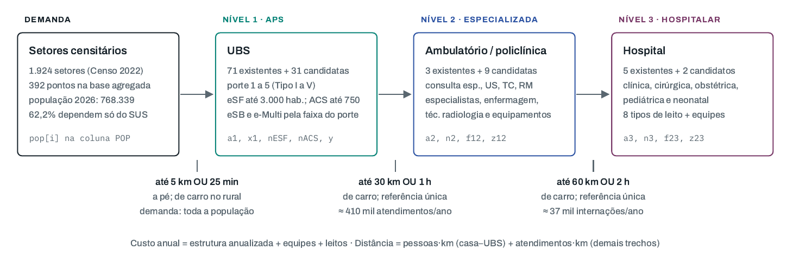
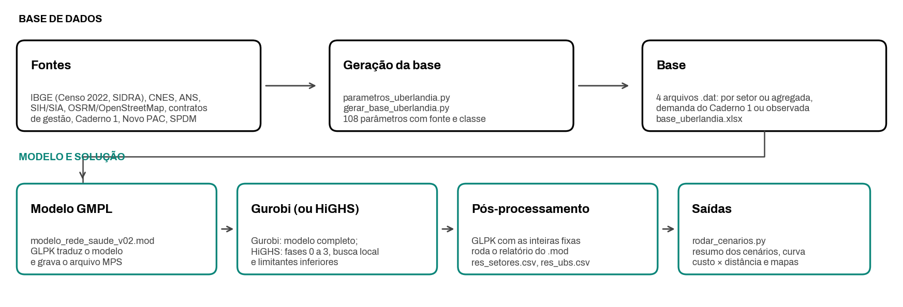
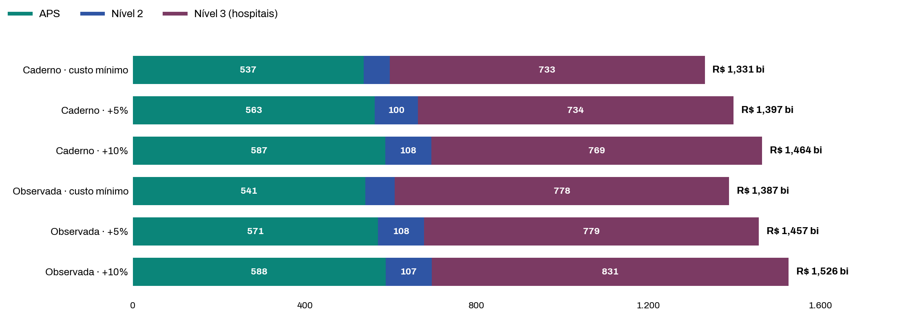
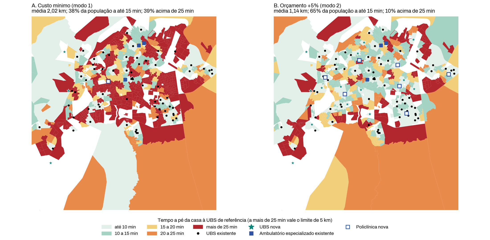
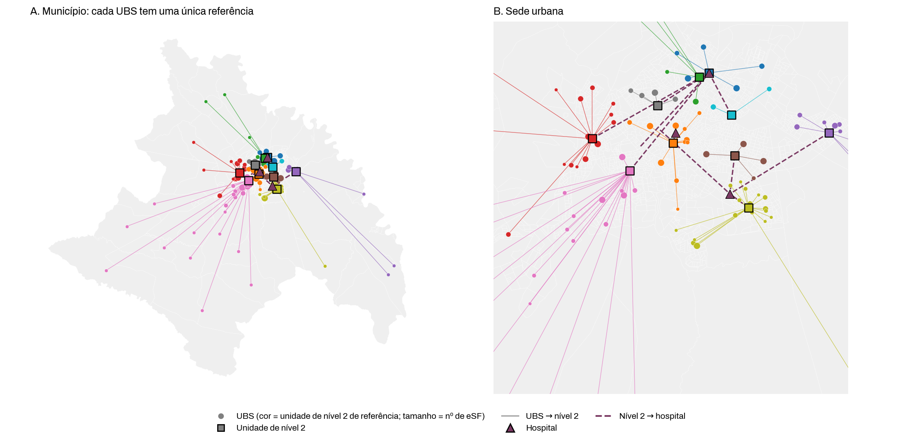
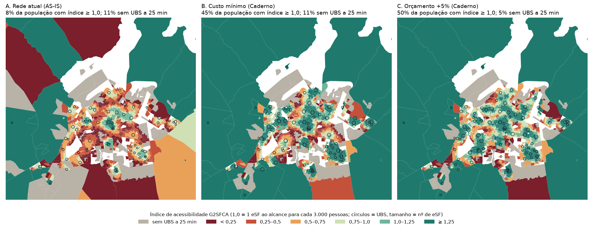

<title>Rede SUS de Uberlândia</title>
<link rel="preconnect" href="https://fonts.googleapis.com">
<link rel="preconnect" href="https://fonts.gstatic.com" crossorigin>
<link href="https://fonts.googleapis.com/css2?family=Archivo:wght@500;600;700&family=IBM+Plex+Mono:wght@400;500&family=Source+Serif+4:ital,opsz,wght@0,8..60,400;0,8..60,600;1,8..60,400&display=swap" rel="stylesheet">
<script>
window.MathJax = { tex: { inlineMath: [['\\(', '\\)']], displayMath: [['\\[', '\\]']] },
                   svg: { fontCache: 'global' }, options: { enableMenu: false } };
</script>
<script src="https://cdn.jsdelivr.net/npm/mathjax@3.2.2/es5/tex-svg-full.js" defer></script>
<style>
/* Layout: folha de artigo sobre fundo neutro; coluna de leitura de ~70 caracteres; figuras, tabelas e esquemas saem para a largura da folha */
:root {
  --bg: #eef1ef; --paper: #fcfdfc; --ink: #1a252d; --muted: #5a6770; --rule: #d3dad7; --soft: #e8edeb;
  --aps: #0b8579; --sec: #2f55a4; --ter: #7a3b69; --hl: #a86c10; --plate: #ffffff; --code: #eef2f0;
  --bom: #1f7a6d; --ruim: #a8323a;
  --f-body: "Source Serif 4", Georgia, "Times New Roman", serif;
  --f-head: "Archivo", "Helvetica Neue", Arial, sans-serif;
  --f-mono: "IBM Plex Mono", ui-monospace, Consolas, monospace;
}
@media (prefers-color-scheme: dark) {
  :root:not([data-theme="light"]) {
    --bg: #0d1316; --paper: #131b20; --ink: #e2e8eb; --muted: #9aa8b0; --rule: #2a363d; --soft: #1a242a;
    --aps: #45c2b3; --sec: #8aa8ef; --ter: #d391c2; --hl: #e3ad4d; --plate: #f3f5f4; --code: #19232a;
    --bom: #5cc0a8; --ruim: #ec7b7f; color-scheme: dark;
  }
}
:root[data-theme="dark"] {
  --bg: #0d1316; --paper: #131b20; --ink: #e2e8eb; --muted: #9aa8b0; --rule: #2a363d; --soft: #1a242a;
  --aps: #45c2b3; --sec: #8aa8ef; --ter: #d391c2; --hl: #e3ad4d; --plate: #f3f5f4; --code: #19232a;
  --bom: #5cc0a8; --ruim: #ec7b7f; color-scheme: dark;
}
* { box-sizing: border-box; }
body { background: var(--bg); color: var(--ink); font-family: var(--f-body); font-size: 17px; line-height: 1.62; margin: 0; }
.folha { max-width: 1120px; margin: 0 auto; background: var(--paper); border-inline: 1px solid var(--rule);
  padding-block: 48px 72px; padding-inline: clamp(16px, 5vw, 64px); }
.folha > * { max-width: 70ch; margin-inline: auto; }
.folha > .larga { max-width: 100%; }
p { margin: 0 0 1em; }
h1, h2, h3, h4, .cap, .meta, table, .eyebrow, .chave, .legenda, summary { font-family: var(--f-head); }
h1 { font-size: clamp(1.65rem, 3.2vw, 2.35rem); line-height: 1.15; font-weight: 700; margin: 0.35em auto 0.3em; text-wrap: balance; letter-spacing: -0.01em; }
.sub { font-family: var(--f-body); font-style: italic; font-size: 1.15rem; color: var(--muted); margin-bottom: 1.4em; text-wrap: balance; }
h2 { font-size: 1.32rem; font-weight: 700; margin: 2.4em auto 0.7em; display: flex; gap: 0.6em; align-items: baseline; text-wrap: balance; }
h2 .n, h3 .n { font-family: var(--f-mono); font-weight: 500; color: var(--aps); font-size: 0.85em; }
h3 { font-size: 1.05rem; font-weight: 600; margin: 1.8em auto 0.5em; display: flex; gap: 0.55em; align-items: baseline; text-wrap: balance; }
h4 { font-size: 0.95rem; font-weight: 600; margin: 1.4em auto 0.4em; }
.eyebrow { font-size: 0.74rem; letter-spacing: 0.09em; text-transform: uppercase; color: var(--muted); }
.meta { font-size: 0.9rem; color: var(--muted); line-height: 1.5; border-top: 1px solid var(--rule); border-bottom: 1px solid var(--rule); padding-block: 12px; margin-bottom: 28px; }
.meta strong { color: var(--ink); font-weight: 600; }
.resumo { background: var(--soft); border-radius: 4px; padding: 20px 24px; margin-bottom: 18px; }
.resumo h2 { margin: 0 0 0.5em; font-size: 0.8rem; letter-spacing: 0.09em; text-transform: uppercase; color: var(--muted); }
.resumo p { font-size: 0.96rem; }
.chave { font-size: 0.88rem; color: var(--muted); }
.chave b { color: var(--ink); font-weight: 600; }
.destaques { border-left: 3px solid var(--aps); padding: 4px 0 4px 18px; margin-block: 22px 8px; }
.destaques h2 { margin: 0 0 0.4em; font-size: 0.8rem; letter-spacing: 0.09em; text-transform: uppercase; color: var(--muted); }
.destaques ul { margin: 0; padding-left: 1.1em; font-size: 0.95rem; }
.destaques li { margin-bottom: 0.25em; }
.faq { border: 1px solid var(--rule); border-radius: 6px; padding: 18px 22px; margin-block: 18px 8px; background: var(--paper); }
.faq > h2 { margin: 0 0 0.2em; font-size: 0.8rem; letter-spacing: 0.09em; text-transform: uppercase; color: var(--muted); }
.faq > p.intro { font-size: 0.92rem; color: var(--muted); margin-bottom: 0.8em; }
.faq dl { margin: 0; display: grid; gap: 12px; }
.faq dt { font-family: var(--f-head); font-weight: 600; font-size: 0.95rem; }
.faq dd { margin: 2px 0 0; font-size: 0.94rem; }
ol.perguntas, ul.lista { padding-left: 1.3em; }
ol.perguntas li, ul.lista li { margin-bottom: 0.4em; }
.nota { font-size: 0.92rem; background: var(--soft); border-radius: 4px; padding: 12px 16px; margin-block: 1em 1.4em; }
.nota b { font-family: var(--f-head); font-weight: 600; }
.alerta { border-left: 3px solid var(--hl); }
figure { margin: 1.8em auto; }
.plate { background: var(--plate); border: 1px solid var(--rule); border-radius: 4px; padding: 8px; }
.plate img { display: block; width: 100%; height: auto; }
.cap { font-size: 0.84rem; color: var(--muted); line-height: 1.45; margin-top: 10px; max-width: 80ch; }
.cap b { color: var(--ink); font-weight: 600; }
.rolar { overflow-x: auto; -webkit-overflow-scrolling: touch; }
.rolar > svg { display: block; min-width: 760px; width: 100%; height: auto; }
table { border-collapse: collapse; width: 100%; font-size: 0.84rem; line-height: 1.4; font-variant-numeric: tabular-nums; }
.tabcap { font-family: var(--f-head); font-size: 0.84rem; color: var(--muted); margin: 1.8em 0 8px; }
.tabcap b { color: var(--ink); font-weight: 600; }
th { text-align: left; font-weight: 600; border-bottom: 1.5px solid var(--ink); padding: 6px 10px 6px 0; vertical-align: bottom; }
td { border-bottom: 1px solid var(--rule); padding: 6px 10px 6px 0; vertical-align: top; }
td.num, th.num { text-align: right; white-space: nowrap; }
tr.real td { background: color-mix(in srgb, var(--hl) 10%, transparent); }
tr.base td { background: var(--soft); }
tr.total td { font-weight: 600; border-top: 1.5px solid var(--ink); }
.fonte { font-family: var(--f-head); font-size: 0.78rem; color: var(--muted); margin-top: 6px; }
.cl { display: inline-block; font-size: 0.68rem; letter-spacing: 0.05em; text-transform: uppercase; font-weight: 600; padding: 1px 6px; border-radius: 3px; border: 1px solid currentColor; white-space: nowrap; }
.cl.dado { color: var(--aps); } .cl.norm { color: var(--sec); } .cl.inf { color: var(--hl); } .cl.dec { color: var(--ter); } .cl.exe { color: var(--ink); }
.barra { display: flex; height: 30px; border-radius: 3px; overflow: hidden; font-family: var(--f-head); font-size: 0.76rem; font-weight: 600; color: #fff; margin-top: 8px; }
.barra span { display: flex; align-items: center; justify-content: center; white-space: nowrap; overflow: hidden; }
.leg-barra { display: flex; flex-wrap: wrap; gap: 6px 16px; font-family: var(--f-head); font-size: 0.8rem; color: var(--muted); margin-top: 8px; }
.leg-barra i { display: inline-block; width: 10px; height: 10px; border-radius: 2px; margin-right: 6px; vertical-align: -1px; }
pre { background: var(--code); border-radius: 4px; padding: 14px 16px; overflow-x: auto; font-family: var(--f-mono); font-size: 0.78rem; line-height: 1.5; }
code { font-family: var(--f-mono); font-size: 0.86em; background: var(--code); padding: 0 4px; border-radius: 3px; overflow-wrap: anywhere; }
pre code { background: none; padding: 0; font-size: 1em; overflow-wrap: normal; }
.cm { color: var(--muted); }
.eq { overflow-x: auto; font-size: 0.95rem; margin-block: 0.6em 1.1em; }
.classif { border: 1px solid var(--rule); border-radius: 4px; padding: 12px 16px; font-size: 0.94rem; }
.classif b { font-family: var(--f-head); font-weight: 600; }
details { border: 1px solid var(--rule); border-radius: 4px; margin-block: 10px; background: var(--paper); }
details > summary { cursor: pointer; padding: 10px 14px; font-weight: 600; font-size: 0.92rem; }
details > summary span { font-weight: 400; color: var(--muted); }
details > pre { margin: 0; border-radius: 0 0 4px 4px; max-height: 70vh; }
details[open] > summary { border-bottom: 1px solid var(--rule); }
/* esquemas SVG */
.dg-box { fill: var(--paper); stroke: var(--rule); stroke-width: 1.5; }
.dg-aps { stroke: var(--aps); } .dg-sec { stroke: var(--sec); } .dg-ter { stroke: var(--ter); } .dg-ink { stroke: var(--ink); } .dg-hl { stroke: var(--hl); }
.dg-fill { fill: var(--soft); }
.dg-t { font-family: var(--f-head); font-weight: 600; font-size: 15px; fill: var(--ink); }
.dg-s { font-family: var(--f-head); font-size: 12.5px; fill: var(--muted); }
.dg-m { font-family: var(--f-mono); font-size: 11.5px; fill: var(--muted); }
.dg-k { font-family: var(--f-head); font-weight: 700; font-size: 11px; letter-spacing: 0.08em; }
.dg-arrow { stroke: var(--muted); stroke-width: 1.6; fill: none; }
.dg-arrowhead { fill: var(--muted); }
.c-aps { fill: var(--aps); } .c-sec { fill: var(--sec); } .c-ter { fill: var(--ter); } .c-ink { fill: var(--ink); } .c-hl { fill: var(--hl); } .c-muted { fill: var(--muted); }
.s-aps { stroke: var(--aps); } .s-hl { stroke: var(--hl); } .s-ter { stroke: var(--ter); } .s-ink { stroke: var(--ink); } .s-rule { stroke: var(--rule); }
.refs p { font-size: 0.88rem; padding-left: 1.6em; text-indent: -1.6em; margin-bottom: 0.55em; line-height: 1.5; }
a { color: var(--sec); overflow-wrap: anywhere; }
:focus-visible { outline: 2px solid var(--hl); outline-offset: 2px; }
.tab-par td:nth-child(3) { white-space: normal; }
.tab-par td { font-size: 0.8rem; }
@media (max-width: 640px) {
  body { font-size: 16px; }
  .folha { border: 0; padding-block: 28px 48px; }
  td, th { padding-right: 8px; }
}
@media (prefers-reduced-motion: reduce) { * { animation: none !important; transition: none !important; } }
/* impressao / PDF: A4, sempre no tema claro */
@page { size: A4; margin: 16mm 15mm 18mm; }
@media print {
  :root, :root:not([data-theme="light"]), :root[data-theme="dark"] {
    --bg: #ffffff; --paper: #ffffff; --ink: #1a252d; --muted: #5a6770; --rule: #d3dad7; --soft: #eef2f0;
    --aps: #0b8579; --sec: #2f55a4; --ter: #7a3b69; --hl: #a86c10; --plate: #ffffff; --code: #f1f4f2; --bom: #1f7a6d; --ruim: #a8323a; color-scheme: light;
  }
  * { -webkit-print-color-adjust: exact; print-color-adjust: exact; }
  body { font-size: 10.5pt; line-height: 1.5; background: #fff; }
  .folha { max-width: none; border: 0; padding: 0; }
  .folha > * { max-width: none; }
  h1 { font-size: 20pt; }
  h2 { font-size: 13pt; margin-top: 1.6em; }
  h2, h3, h4, .tabcap { break-after: avoid; page-break-after: avoid; }
  figure, .plate, .eq, .classif, .resumo, .destaques, tr, .barra, .faq dd { break-inside: avoid; page-break-inside: avoid; }
  table { font-size: 8.5pt; }
  pre { white-space: pre-wrap; overflow-wrap: anywhere; font-size: 7.2pt; max-height: none !important; }
  details { border: 0; }
  details > summary { padding-left: 0; }
  .eq { overflow: visible; }
  .rolar { overflow: visible; }
  .rolar > svg { min-width: 0; }
  a { color: inherit; text-decoration: none; }
}
</style>

<article class="folha">

<p class="eyebrow">Relatório técnico em formato de artigo · EPD899 Operations Research for Health Care · DEP/UFMG</p>
<h1>Localização e dimensionamento da rede SUS de Uberlândia em três níveis</h1>
<p class="sub">Um modelo hierárquico de programação inteira mista para atenção primária, atenção especializada e hospitais</p>
<div class="meta">
  <strong>Arthur Navarro Bessa</strong>, <strong>Carolina Fialho</strong> e <strong>Kevin Patrocinio</strong> · Graduação em Engenharia de Produção, Universidade Federal de Minas Gerais<br>
  Disciplina do prof. João Flávio de Freitas Almeida (LEPOINT/DEP/UFMG) · Versão revisada de 4 de novembro de 2026<br>
  Resultados da rodada de 03/11/2026: base agregada (392 pontos), solver Gurobi, seis cenários. A rodada de 29/10/2026, com HiGHS, entra só na comparação da seção 7.8.<br>
  Mapa interativo com a rede atual e os seis cenários: Mapa da Rede SUS de Uberlândia (arquivo <code>mapa/mapa_rede_sus.html</code>).
</div>

<section class="faq" aria-labelledby="t-faq">
  <h2 id="t-faq">Leia primeiro: respostas rápidas</h2>
  <p class="intro">Perguntas que surgiram na leitura da versão anterior. Cada resposta remete à seção com o detalhe.</p>
  <dl>
    <dt>O que são os R$ 1,33 bilhão por ano?</dt>
    <dd>É um <b>resultado do modelo</b>: o custo anual da rede de menor custo que atende toda a população dentro dos limites de acesso (modo 1, demanda do Caderno 1). Não é o orçamento da Prefeitura nem o gasto atual. Para comparar: a Lei Orçamentária de 2026 reserva <b>R$ 1,288 bi</b> para a saúde, a Prefeitura empenhou <b>R$ 1,385 bi</b> em 2025, e a rede que existe hoje custaria <b>R$ 0,974 bi</b> por ano pelas mesmas regras de custo do modelo. As três contas têm escopos diferentes (seções 3.5, 3.6 e 7.7).</dd>
    <dt>As unidades que já existem podem mudar de lugar?</dt>
    <dd><b>Não.</b> O modelo mantém abertas todas as UBS, ambulatórios e hospitais existentes (restrições R02, R27 e R37) e não deixa reduzir as equipes, profissionais e leitos que eles têm hoje (R12–R15, R30 e R40). Ele só pode ampliar o que existe e abrir unidades novas nos locais candidatos (seção 4.2).</dd>
    <dt>Qual a cobertura atual da APS? Ela foi calculada?</dt>
    <dd><b>Não foi calculada por nós: é a cobertura oficial do Ministério da Saúde</b>, publicada no e-Gestor AB (Histórico de Cobertura APS): <b>58,46%</b> em agosto de 2026 (88 eSF, 15 eAP 30 h, 56 eAP 20 h e 1 eCR; capacidade de 445.375 pessoas para 761.835 habitantes). A série está em <code>dados/cobertura_aps/</code>. Como conferência, refizemos a conta com o parâmetro do exercício: 71 UBS com 90 eSF e 71 eAP. As eAP valem 51 eSF pela carga horária do médico; total de 143 eSF-equivalentes. 143 × 3.000 pessoas = 429 mil pessoas, 55,8% dos 768.338 habitantes de 2026. Pelo método oficial do Ministério da Saúde (3.500 pessoas por eSF), a mesma rede cobre 61,7%. O resultado, 55,8%, fica próximo do oficial. A Prefeitura divulgou 93,35% em julho de 2022, com outro indicador (seção 3.3).</dd>
    <dt>Qual a diferença entre "Caderno" e "observada"? O que são o 1,14 e o "lado alto"?</dt>
    <dd>"Caderno" usa as taxas de internação do Caderno 1 do Ministério da Saúde (ponto médio de cada faixa): 37,0 mil internações por ano. "Observada" multiplica essa demanda por 1,14, o excesso de leito-dia do SIH sobre o Caderno medido com a população de 2022: 42,2 mil internações. O SIH registra 40,0 mil. A faixa do Caderno vai de 28,6 mil a 45,4 mil; "lado alto" é a metade de cima dessa faixa, onde o cenário "observada" fica. Na prática, ele é um cenário de demanda alta (seção 5.3).</dd>
    <dt>Como funcionam as duas otimizações e as folgas?</dt>
    <dd>Primeiro o modelo acha o menor custo possível, C* = R$ 1,331 bi. Depois roda de novo com outro objetivo, a menor distância total, proibindo gastar mais que C* × (1 + folga). Com 5% de folga (R$ 66,5 mi a mais), a caminhada média até a UBS cai de 2,02 para 1,14 km. Com 10%, abre um hospital novo (seção 4.4).</dd>
    <dt>E a acessibilidade espacial?</dt>
    <dd>Foi calculada pelo método de duas etapas com área de captação flutuante (G2SFCA), com 25 min de alcance. O índice 1,0 significa uma eSF ao alcance para cada 3.000 pessoas. Hoje a média é 0,56 e só 8% da população tem índice 1,0 ou mais. Com o orçamento +5%, a média vai a 1,11 e 50% da população passa de 1,0 (seção 7.6).</dd>
  </dl>
</section>

<section class="resumo" aria-labelledby="t-resumo">
  <h2 id="t-resumo">Resumo</h2>
  <p>Este trabalho aplica um modelo de localização hierárquica capacitada em três níveis à rede do Sistema Único de Saúde (SUS) de Uberlândia (MG), que tem 768 mil habitantes em 2026. O modelo decide quantas Unidades Básicas de Saúde (UBS) abrir, com que porte e quantas equipes; quais policlínicas e hospitais abrir e com quantos profissionais, equipamentos e leitos; e para onde cada setor censitário e cada unidade encaminham a sua demanda. As unidades existentes ficam onde estão e não perdem recursos. Os limites de acesso são fixos: 5 km ou 25 min até a UBS, 30 km ou 1 h até o nível 2 e 60 km ou 2 h até o hospital. A base reúne 1.924 setores do Censo 2022, CNES, ANS, SIH/SIA, tempos de viagem do OSRM e custos calibrados nos contratos de gestão do município. Cada um dos 108 parâmetros tem fonte e classificação.</p>
  <p>Hoje a cobertura oficial da atenção primária é de 58,5% (e-Gestor, agosto de 2026) e custaria R$ 0,97 bilhão por ano pelas regras de custo do modelo; a Prefeitura reservou R$ 1,29 bilhão para a saúde na Lei Orçamentária de 2026. O problema é resolvido em duas etapas: primeiro o custo anual mínimo, depois a menor distância total com o orçamento limitado ao custo mínimo mais uma folga. Com o Gurobi, o custo mínimo é de <b>R$ 1,33 bilhão por ano</b> (gap de 2,3%), quase o dobro de equipes de Saúde da Família, mas deixa 40% da população urbana a mais de 25 minutos de caminhada da sua UBS. Com <b>5% a mais de orçamento</b>, a distância média casa–UBS cai de 2,02 para 1,14 km, a parcela urbana acima de 25 minutos cai para 10% e a distância até o nível 2 cai de 6,8 para 2,9 km, com 29 UBS e 7 policlínicas novas. A acessibilidade espacial (G2SFCA) sobe de 0,56 hoje para 1,11. A folga de 10% compra sobretudo um hospital novo. O custo mínimo é quase indiferente à localização, e por isso pequenas folgas de orçamento compram grandes ganhos de acesso.</p>
  <p class="chave"><b>Palavras-chave:</b> localização hierárquica; atenção primária à saúde; programação inteira mista; acessibilidade espacial; planejamento do SUS; Uberlândia.</p>
</section>

<aside class="destaques" aria-labelledby="t-dest">
  <h2 id="t-dest">Destaques</h2>
  <ul>
    <li>Modelo em GMPL de três níveis (UBS, policlínica, hospital) com portes de UBS, equipes, leitos e referência única entre níveis.</li>
    <li>Base de Uberlândia reprodutível: 108 parâmetros, cada um com fonte, link ou arquivo e classe (dado, norma, inferência, decisão ou enunciado).</li>
    <li>Rede atual: cobertura oficial da APS de 58,5% (e-Gestor), 143 eSF-equivalentes e R$ 0,97 bi/ano pelas regras do modelo. Custo mínimo da rede completa: R$ 1,33 bi/ano.</li>
    <li>Com 5% a mais, a caminhada média até a UBS cai de 2,0 para 1,1 km e a acessibilidade G2SFCA média passa de 1,0 eSF por 3.000 pessoas.</li>
    <li>A referência única leva cada policlínica nova a ter tomógrafo e ressonância com uso baixo, e o CEM fica com 14% de uso, porque o modelo não move profissionais entre unidades.</li>
  </ul>
</aside>

<h2><span class="n">1</span>Introdução</h2>
<p>O SUS organiza a assistência em níveis de complexidade. A atenção primária à saúde (APS), prestada nas UBS pelas equipes de Saúde da Família (eSF), é a porta de entrada e coordena o cuidado. Quando o caso exige consulta com especialista ou exame de imagem, o paciente é encaminhado à atenção especializada ambulatorial (nível 2). Quando exige internação, vai ao hospital (nível 3). Planejar essa rede no município significa decidir onde ficam as unidades, de que tamanho, com quantos profissionais e quem é referência de quem. São decisões acopladas: abrir uma UBS muda a demanda que chega a cada policlínica, e isso muda a demanda de cada hospital.</p>
<p>A Pesquisa Operacional trata esse tipo de decisão como um problema de localização-alocação hierárquico (NARULA, 1984; ŞAHIN; SÜRAL, 2007). Este trabalho aplica um modelo dessa família a Uberlândia (MG), segundo município mais populoso de Minas Gerais e polo regional de saúde do Triângulo Mineiro, para responder a quatro perguntas:</p>
<ol class="perguntas">
  <li>Como está a rede hoje: quanto da população ela cobre, quanto custa e quanto a Prefeitura gasta?</li>
  <li>Qual é o custo anual mínimo de uma rede que atende toda a população dentro dos limites de acesso do exercício?</li>
  <li>Quanto acesso se compra com folgas de 5% e 10% sobre esse custo, medido em distância e em acessibilidade espacial?</li>
  <li>Como a resposta muda quando a demanda hospitalar é mais alta que o parâmetro normativo?</li>
</ol>
<p>As contribuições são quatro: um modelo em GMPL que integra portes de UBS, composição de equipes, capacidade por recurso e referência única; uma base de dados de Uberlândia reprodutível, com fonte e classificação de cada parâmetro; a curva custo × acesso que resulta da abordagem em duas etapas; e a comparação da rede atual com os cenários em custo, orçamento e acessibilidade espacial. A seção 2 resume o referencial teórico, a 3 descreve a situação atual, a 4 o modelo, a 5 os dados, a 6 o código e a 7 os resultados. A seção 8 discute limitações e a 9 conclui. O Apêndice B traz o código completo e o C, todos os parâmetros.</p>

<h2><span class="n">2</span>Referencial teórico</h2>
<h3><span class="n">2.1</span>Localização de serviços de saúde</h3>
<p>Daskin e Dean (2004) organizam os modelos clássicos de localização de serviços de saúde em três famílias: cobertura de conjuntos (o menor número de unidades que deixa toda a demanda a menos de uma distância-limite), máxima cobertura (a maior demanda coberta com um número dado de unidades) e p-mediana (a menor distância média ponderada pela demanda). Daskin (2008) acrescenta que as escolhas de modelagem que mais pesam estão no objetivo, na agregação da demanda e na forma de medir a distância. Os três pontos reaparecem neste trabalho.</p>
<p>Rahman e Smith (2000) revisam aplicações de localização-alocação ao planejamento de saúde em países em desenvolvimento e destacam a acessibilidade física como critério central, ao lado da escassez de dados. Ahmadi-Javid, Seyedi e Syam (2017) separam as instalações não emergenciais (UBS, ambulatórios e hospitais, o caso deste trabalho) das emergenciais (ambulâncias e pronto-socorro), e os objetivos em eficiência (custo), acesso ou cobertura e equidade. Güneş e Nickel (2015) chegam a uma divisão semelhante. Schultz (1970) mostra que a utilização dos serviços cai com a distância. Aqui a demanda é normativa, fixada pelos parâmetros do Ministério da Saúde, e por isso a distância entra como critério de acesso sem alterar o volume atendido. A demanda sensível à distância fica como extensão.</p>
<h3><span class="n">2.2</span>Modelos hierárquicos</h3>
<p>Nos modelos hierárquicos, as instalações formam níveis que interagem. Narula (1984) propõe a primeira classificação desses problemas, e Narula (1986) revisa os de tipo minisum em redes. Şahin e Süral (2007) classificam os sistemas por quatro atributos:</p>
<ul class="lista">
  <li><b>padrão de fluxo:</b> <i>single-flow</i> quando o usuário percorre os níveis em sequência; <i>multi-flow</i> quando pode entrar em qualquer nível;</li>
  <li><b>variedade de serviços:</b> <i>nested</i> quando o nível superior também oferece os serviços dos inferiores; <i>non-nested</i> quando cada nível oferece serviços próprios, o que corresponde aos sistemas exclusivos de Narula;</li>
  <li><b>configuração espacial:</b> coerente quando todos os clientes de uma unidade inferior são encaminhados à mesma unidade superior;</li>
  <li><b>objetivo:</b> mediana, cobertura ou custo fixo.</li>
</ul>
<p>Ortiz-Astorquiza, Contreras e Laporte (2018) revisam os problemas de localização em múltiplos níveis, em que a demanda atravessa uma cadeia de instalações, e mostram que mesmo as versões não capacitadas são NP-difíceis. Esse resultado explica a dificuldade computacional relatada na seção 6.</p>
<div class="classif"><b>Classificação do modelo deste trabalho</b> (ŞAHIN; SÜRAL, 2007): <i>single-flow</i> (setor → UBS → policlínica → hospital), <i>non-nested</i> (cada nível oferece serviços próprios), coerente (referência única entre níveis), objetivo de mediana com custo fixo e capacitado.</div>
<h3><span class="n">2.3</span>Parâmetros normativos do SUS</h3>
<p>A Política Nacional de Atenção Básica (PNAB, Portaria 2.436/2017) define que cada eSF responde por 2.000 a 3.500 pessoas e cada agente comunitário de saúde (ACS) por até 750. O enunciado do exercício fixa 3.000 pessoas por eSF. Freire et al. (2021) mostram que, depois da PNAB 2017, cresceu o número de municípios que reduziram seus ACS, sobretudo os mais populosos e de IDH alto, perfil que inclui Uberlândia.</p>
<p>A Portaria GM/MS 1.631/2015 e o Caderno 1 de Critérios e Parâmetros Assistenciais (BRASIL, 2017) fornecem as taxas de consultas especializadas, exames e internações por habitante, o tempo médio de permanência (TMP) e a ocupação de leitos. A necessidade de leitos segue \(NL = NI \cdot TMP / (365 \cdot TO)\), com \(NI\) internações por ano e \(TO\) a taxa de ocupação. O Novo PAC Saúde define os tipos de UBS (I a V) e seus custos de construção, e a Portaria GM/MS 635/2023 define as modalidades de equipe multiprofissional (e-Multi). Como referência internacional, a OMS (WHO, 2016) adota o limiar de 4,45 médicos, enfermeiros e parteiras por mil habitantes.</p>
<h3><span class="n">2.4</span>Acessibilidade espacial</h3>
<p>Distância média e cobertura não dizem se a oferta perto de cada pessoa é suficiente para todos que disputam a mesma unidade. O método de duas etapas com área de captação flutuante (<i>two-step floating catchment area</i>, 2SFCA) de Luo e Wang (2003) mede isso em duas contas. Na primeira, cada unidade \(j\) divide a sua oferta \(S_j\) pela população que a alcança dentro de um tempo-limite \(t_0\), e obtém uma razão oferta/demanda \(R_j\). Na segunda, cada setor \(i\) soma as razões das unidades que ele alcança. Luo e Qi (2009) introduzem pesos que caem com o tempo dentro da área de captação, e Dai (2010) usa um peso gaussiano (G2SFCA):</p>
<div class="eq">\[
W(t)=\begin{cases}\dfrac{e^{-\frac12 (t/t_0)^2}-e^{-\frac12}}{1-e^{-\frac12}} & t\le t_0\\[4pt] 0 & t>t_0\end{cases}
\qquad
R_j=\frac{S_j}{\sum_{i} P_i\,W(t_{ij})}
\qquad
A_i=\sum_{j} R_j\,W(t_{ij})
\]</div>
<p>O índice \(A_i\) tem a unidade da oferta por pessoa (aqui, eSF por pessoa). Uma propriedade útil: a média de \(A_i\) ponderada pela população é igual à oferta total dividida pela população, desde que toda UBS tenha alguém no seu alcance. O índice é então uma forma de ver <i>onde</i> a cobertura agregada está concentrada.</p>

<h2><span class="n">3</span>Uberlândia hoje (situação atual)</h2>
<h3><span class="n">3.1</span>Território e população</h3>
<p>Uberlândia tem 713.224 habitantes no Censo 2022 e 768.339 na estimativa do IBGE para 2026. A malha de 1.924 setores censitários cobre cerca de 4 mil km². Os setores urbanos concentram 98,6% da população em 203 km²; os outros 10,8 mil moradores vivem em 62 setores rurais que somam 3,8 mil km² (Figura 1). Além da sede, o município tem os distritos de Cruzeiro dos Peixotos, Martinésia, Miraporanga e Tapuirama. Segundo a ANS, 37,8% da população tem plano de saúde. Os outros 62,2% dependem só do SUS para a atenção especializada e hospitalar.</p>
<h3><span class="n">3.2</span>A rede existente</h3>
<p>A APS tem 71 UBS, geridas por organizações sociais (OS) por setor da cidade, por meio de contratos de gestão. Esses contratos foram a principal fonte dos custos da APS. Na atenção especializada, o SUS municipal conta com o Centro de Especialidades Médicas (CEM), o ambulatório do Hospital de Clínicas da UFU (HC-UFU) e o consórcio AMVAP, que somam 555 mil consultas especializadas por ano no SIA. As oito Unidades de Atendimento Integrado (UAI) são de urgência e ficam fora do modelo, mas os seus terrenos entram como candidatos a policlínica, ao lado da Policlínica do Jaraguá, aprovada no Novo PAC (R$ 16,9 milhões). Na atenção hospitalar, o HC-UFU é referência para toda a macrorregião: só 75,3% das suas internações são de residentes de Uberlândia. Os outros hospitais do modelo são o Hospital e Maternidade Municipal com o anexo Santa Catarina, o Centro de Internação Pediátrica e o Hospital do Triângulo (contratado). Os residentes somam cerca de 40 mil internações hospitalares por ano no SIH.</p>

<figure class="larga">
  <div class="plate"></div>
  <figcaption class="cap"><b>Figura 1.</b> Densidade populacional por setor censitário (escala logarítmica) e rede existente e candidata. O tamanho dos pontos das UBS existentes é proporcional às eSF-equivalentes. Fonte: elaboração própria com IBGE (Censo 2022), CNES e a base deste trabalho.</figcaption>
</figure>

<p class="tabcap"><b>Tabela 1.</b> Rede existente e locais candidatos por nível</p>
<div class="rolar larga">
<table>
  <thead><tr><th>Nível</th><th>Existentes</th><th>Candidatos</th><th>Capacidade atual</th></tr></thead>
  <tbody>
    <tr><td><b>APS (UBS)</b></td><td>71 UBS</td><td>31 locais: 1 projeto aprovado (Fruta do Conde), 12 setores urbanos densos e 18 setores sem UBS a 5 km ou 25 min</td><td>90 eSF + 71 eAP (= 143 eSF-equivalentes), 112 eSB, ~500 ACS, 30 e-Multi</td></tr>
    <tr><td><b>Nível 2</b></td><td>CEM, Ambulatório Amélio Marques (HC-UFU), AMVAP</td><td>8 UAIs (Martins, Roosevelt, Tibery, Morumbi, Pampulha, São Jorge, Planalto, Luizote) e Policlínica do Jaraguá</td><td>555 mil consultas, 95 mil ultrassons, 36 mil TC e 13 mil RM por ano (SIA; inclui não residentes)</td></tr>
    <tr><td><b>Nível 3</b></td><td>HC-UFU, Municipal + anexo Santa Catarina, Internação Pediátrica, Hospital do Triângulo</td><td>Hospital Leste (terreno da UAI Morumbi) e Hospital Oeste (terreno da UAI Planalto)</td><td>leitos SUS do CNES (HC-UFU com 75,3%); ~40 mil internações de residentes por ano (SIH)</td></tr>
  </tbody>
</table>
</div>
<p class="fonte">Fonte: CNES, SIA/SIH (DATASUS), Prefeitura de Uberlândia e Novo PAC; organização própria. Lista completa nas abas <code>APS_J1</code>, <code>Secundaria_J2</code> e <code>Terciaria_J3</code> de <code>dados/base_uberlandia.xlsx</code>.</p>

<h3><span class="n">3.3</span>Cobertura da APS: o dado oficial e a nossa conferência</h3>
<p>A cobertura oficial da APS é publicada pelo Ministério da Saúde no e-Gestor AB, relatório Histórico de Cobertura (<a href="https://relatorioaps.saude.gov.br/cobertura/aps">relatorioaps.saude.gov.br/cobertura/aps</a>). O indicador é a cobertura potencial da Nota Técnica nº 301/2022: capacidade das equipes homologadas dividida pela população. Para Uberlândia, a série vai de 62,82% em janeiro de 2024 a <b>58,46% em agosto de 2026</b>; a queda de 2025 vem da atualização da população de referência (de 713 mil para 755 mil), e não da perda de equipes. A cobertura de agentes comunitários é de 45,51% (613 ACS ativos). Os dados por competência estão em <code>dados/cobertura_aps/</code>. Esse número não foi calculado por nós. A conta abaixo é apenas uma conferência com o parâmetro do exercício.</p>
<p>Cobertura, aqui, é capacidade: quantas pessoas as equipes existentes conseguem acompanhar pelo parâmetro de pessoas por equipe, dividido pela população. Não é o número de pessoas cadastradas nem de pessoas atendidas. A conta usa dois tipos de equipe. A eSF tem médico de 40 horas e vale uma equipe inteira. A eAP (equipe de Atenção Primária, típica das UBS tradicionais) tem médico de 20 a 40 horas; pela PNAB, ela vale uma fração de eSF proporcional à carga do médico. A carga de cada eAP foi lida no CNES, equipe por equipe (função <code>tabela_aps</code> do gerador, Apêndice B).</p>
<p class="tabcap"><b>Tabela 2.</b> Cobertura da APS em 2026, passo a passo</p>
<div class="rolar larga">
<table>
  <thead><tr><th>Passo</th><th>Parâmetro do exercício (3.000 por eSF)</th><th>Método do MS (NT 301/2022)</th></tr></thead>
  <tbody>
    <tr><td>eSF (médico de 40 h)</td><td class="num">90 × 3.000 = 270.000</td><td class="num">90 × 3.500 = 315.000</td></tr>
    <tr><td>eAP com médico de 20 h (31 equipes)</td><td class="num">31 × 0,5 × 3.000 = 46.500</td><td class="num">31 × 1.750 = 54.250</td></tr>
    <tr><td>eAP com médico de 30–33 h (18 equipes)</td><td class="num">18 × 0,75 × 3.000 = 40.500</td><td class="num">18 × 2.625 = 47.250</td></tr>
    <tr><td>eAP com médico de 35 h ou mais (22 equipes)</td><td class="num">22 × 1,0 × 3.000 = 66.000</td><td class="num">22 × 2.625 = 57.750</td></tr>
    <tr class="total"><td>Pessoas cobertas</td><td class="num">143 eSF-eq × 3.000 = 429.000</td><td class="num">474.250</td></tr>
    <tr><td>População 2026 (IBGE)</td><td class="num">768.338</td><td class="num">768.338</td></tr>
    <tr class="real"><td>Cobertura</td><td class="num"><b>55,8%</b></td><td class="num"><b>61,7%</b></td></tr>
  </tbody>
</table>
</div>
<p class="fonte">Na conta do exercício, a eAP vale 0,5, 0,75 ou 1,0 eSF; a soma por UBS é arredondada (51 eSF-equivalentes no total). A Nota Técnica 301/2022-CGESF/DESF/SAPS/MS só tem eAP de 20 h e de 30 h; as de 35 h ou mais entram como 30 h. A NT conta só equipes homologadas pelo MS, e por isso o valor oficial pode ser menor.</p>
<p><b>Agentes comunitários.</b> Com cerca de 500 ACS e 750 pessoas por ACS, a cobertura de ACS é de 375 mil pessoas, 49% da população. O CNES vincula só cerca de 210 ACS a equipes; o número de 500 é da Prefeitura (março de 2025).</p>
<p><b>Dado divulgado pelo governo da cidade.</b> A Prefeitura informou, em setembro de 2022, que a cobertura da atenção primária passou de 48,88% em 2017 para 93,35% em julho de 2022 (<a href="https://www.uberlandia.mg.gov.br/2022/09/23/uberlandia-tem-a-melhor-atencao-primaria-do-brasil-na-saude/" target="_blank" rel="noopener">portal da Prefeitura</a>). A nota não diz o indicador; um valor tão alto com esta rede só é possível com uma medida de cadastro (pessoas cadastradas nas equipes, que o programa Previne Brasil incentivou entre 2020 e 2023), e não de capacidade. Em julho de 2026 a Prefeitura divulgou que Uberlândia ficou em primeiro lugar, entre os municípios com mais de 600 mil habitantes, no ranking do cofinanciamento federal da APS (vínculo, acompanhamento e qualidade), sem informar cobertura. Não encontramos valor oficial de cobertura de 2025 ou 2026; o Ministério publica a série municipal no painel <a href="https://relatorioaps.saude.gov.br/cobertura/aps" target="_blank" rel="noopener">Histórico de Cobertura da APS</a>, que vale consultar antes da apresentação.</p>
<div class="nota"><b>Por que usar 3.000.</b> O enunciado fixa 3.000 pessoas por eSF, dentro da faixa da PNAB (2.000 a 3.500). Com 3.500, o mínimo de equipes para 100% da população cai de 257 para 220 (seção 8).</div>

<h3><span class="n">3.4</span>Distância e tempo até a UBS existente mais próxima</h3>
<p>Mesmo sem capacidade para todos, a rede atual está espalhada pela cidade. Medindo o tempo a pé de cada setor urbano até a UBS existente mais próxima (de carro nos setores rurais), 62% da população fica a até 15 minutos e 89% a até 25 minutos; a média é de 14,7 minutos e 1,32 km (Figura 2). Há 28 setores, com 5.343 pessoas, sem nenhuma UBS a 5 km ou 25 min, quase todos na zona rural. São esses setores que obrigam o modelo a abrir UBS rurais em todos os cenários.</p>
<figure class="larga">
  <div class="plate"></div>
  <figcaption class="cap"><b>Figura 2.</b> Situação atual: tempo da casa até a UBS existente mais próxima, a pé na sede e de carro na zona rural. Pontos pretos: UBS existentes (tamanho proporcional às eSF-equivalentes); quadrados: ambulatórios especializados; triângulos: hospitais. Fonte: IBGE, CNES e OSRM; <code>analise_cenarios.py</code>.</figcaption>
</figure>

<h3><span class="n">3.5</span>Orçamento da saúde: LOA 2026 e execução</h3>
<p>A Lei Orçamentária Anual (LOA) de Uberlândia para 2026, aprovada pela Câmara Municipal sem emendas, estima a receita em <b>R$ 5,420 bilhões</b> e reserva <b>R$ 1,288 bilhão</b> à função Saúde, a maior pasta, seguida da Educação (R$ 1,102 bi). A Tabela 3 mostra a dotação de 2026 por subfunção e a execução de 2024 e 2025, extraídas do Relatório Resumido da Execução Orçamentária (RREO, Anexo 2) que o município envia ao Tesouro Nacional (SICONFI).</p>
<p class="tabcap"><b>Tabela 3.</b> Despesa da função Saúde por subfunção (R$ milhões)</p>
<div class="rolar larga">
<table>
  <thead><tr><th>Subfunção</th><th class="num">LOA 2026 (dotação inicial)</th><th class="num">2026 até ago. (empenhado)</th><th class="num">2025 (empenhado)</th><th class="num">2024 (empenhado)</th><th>Relação com o modelo</th></tr></thead>
  <tbody>
    <tr><td>Atenção Básica</td><td class="num">294,7</td><td class="num">267,7</td><td class="num">309,7</td><td class="num">322,3</td><td>APS (nível 1)</td></tr>
    <tr><td>Assistência Hospitalar e Ambulatorial</td><td class="num">764,7</td><td class="num">730,9</td><td class="num">831,0</td><td class="num">785,2</td><td>níveis 2 e 3, mais urgência (UAI), que fica fora</td></tr>
    <tr><td>Suporte Profilático e Terapêutico</td><td class="num">57,8</td><td class="num">52,3</td><td class="num">46,1</td><td class="num">52,6</td><td>fora (assistência farmacêutica)</td></tr>
    <tr><td>Vigilância Epidemiológica e Sanitária</td><td class="num">35,9</td><td class="num">22,7</td><td class="num">36,2</td><td class="num">44,7</td><td>fora</td></tr>
    <tr><td>Alimentação e Nutrição</td><td class="num">1,5</td><td class="num">1,9</td><td class="num">1,0</td><td class="num">2,3</td><td>fora</td></tr>
    <tr><td>Administração geral e demais</td><td class="num">133,1</td><td class="num">97,5</td><td class="num">161,4</td><td class="num">144,2</td><td>fora (sede da Secretaria, gestão)</td></tr>
    <tr class="total"><td>Total da função Saúde</td><td class="num">1.287,9</td><td class="num">1.172,9</td><td class="num">1.385,4</td><td class="num">1.351,2</td><td></td></tr>
  </tbody>
</table>
</div>
<p class="fonte">Fonte: RREO Anexo 2 (despesas por função e subfunção) de Uberlândia, 6º bimestre de 2024 e de 2025 e 4º bimestre de 2026, pela <a href="https://apidatalake.tesouro.gov.br/ords/siconfi/tt/rreo?an_exercicio=2026&amp;nr_periodo=4&amp;co_tipo_demonstrativo=RREO&amp;no_anexo=RREO-Anexo%2002&amp;id_ente=3170206" target="_blank" rel="noopener">API do SICONFI (Tesouro Nacional)</a>; total da LOA: <a href="https://diariodeuberlandia.com.br/noticia/38995/loa-preve-orcamento-de-r-54-bilhoes-para-uberlandia-em-2026" target="_blank" rel="noopener">Diário de Uberlândia (30/09/2025)</a> e <a href="https://regionalzao.com.br/colunas/poder/camara-de-uberlandia-aprova-ppa-e-loa-2026-orcamento-sera-de-r-542-bilhoes" target="_blank" rel="noopener">Regionalzão</a>. Empenhado = despesa comprometida no ano. A dotação é atualizada durante o ano (R$ 1.340 mi em agosto de 2026).</p>

<p><b>De onde vem o dinheiro.</b> O SUS é financiado pelas três esferas. O município tem de aplicar pelo menos 15% das receitas de impostos e transferências constitucionais em ações e serviços públicos de saúde (Lei Complementar 141/2012). A União e o Estado transferem recursos "fundo a fundo" para o Fundo Municipal de Saúde. A divisão aparece no RREO Anexo 12, que Uberlândia publica no seu portal. A Tabela 4 resume o orçamento de 2025 e a execução de 2024; o Anexo 12 de 2026 não estava publicado nem no portal da Prefeitura nem no SICONFI quando este relatório foi escrito.</p>
<p class="tabcap"><b>Tabela 4.</b> Financiamento da saúde por esfera de governo (R$ milhões)</p>
<div class="rolar larga">
<table>
  <thead><tr><th>Origem</th><th class="num">LOA 2025 (previsão inicial)</th><th class="num">%</th><th class="num">2024 (realizado)</th><th class="num">%</th></tr></thead>
  <tbody>
    <tr><td>Município (recursos próprios aplicados em saúde)</td><td class="num">715,1</td><td class="num">60,5%</td><td class="num">774,9</td><td class="num">62%</td></tr>
    <tr><td>União (transferências do SUS)</td><td class="num">325,7</td><td class="num">27,6%</td><td class="num">305,4</td><td class="num">24%</td></tr>
    <tr><td>Estado de Minas Gerais (transferências do SUS)</td><td class="num">121,1</td><td class="num">10,2%</td><td class="num">145,6</td><td class="num">12%</td></tr>
    <tr><td>Outras receitas vinculadas à saúde</td><td class="num">19,7</td><td class="num">1,7%</td><td class="num">21,0</td><td class="num">2%</td></tr>
    <tr class="total"><td>Total</td><td class="num">1.181,6</td><td class="num">100%</td><td class="num">1.246,9</td><td class="num">100%</td></tr>
  </tbody>
</table>
</div>
<p class="fonte">Fonte: RREO Anexo 12 de Uberlândia: <a href="https://docs.uberlandia.mg.gov.br/wp-content/uploads/2025/06/Anexo-12.pdf" target="_blank" rel="noopener">data-base 30/04/2025</a> (dotação inicial de 2025: despesas com recursos próprios e com transferências; receitas de transferências por origem) e <a href="https://docs.uberlandia.mg.gov.br/wp-content/uploads/2025/01/Anexo-12.pdf" target="_blank" rel="noopener">data-base 31/12/2024</a> (recursos próprios liquidados e transferências recebidas). Em 2025, o total soma a despesa prevista com recursos próprios (R$ 715,1 mi) e as receitas de transferência previstas (R$ 466,4 mi); a dotação inicial da saúde era de R$ 1.181,0 mi. Em 2024 o município aplicou 34,3% das receitas de impostos em saúde, mais que o dobro do mínimo de 15%. Os R$ 1.246,9 mi de 2024 somam receitas recebidas e recursos próprios liquidados; a despesa total liquidada foi de R$ 1.303,9 mi, e a diferença vem de saldos de anos anteriores.</p>
<p>Se 2026 repetir a estrutura de 2025, dos R$ 1,288 bi da LOA cerca de R$ 780 mi viriam do município, R$ 355 mi da União e R$ 130 mi do Estado. É uma estimativa: a divisão oficial de 2026 sai no Anexo 12. Dois cuidados na comparação com o modelo: o salário dos servidores do HC-UFU, hospital federal gerido pela Ebserh, é pago pela União fora do orçamento municipal; e o orçamento municipal inclui urgência, farmácia, vigilância e administração, que o modelo não cobre.</p>

<h3><span class="n">3.6</span>Quanto custa a rede atual pelas regras do modelo</h3>
<p>Para comparar a rede de hoje com os cenários na mesma régua, aplicamos as equações de custo do modelo (DefCusto1 a DefCusto3, seção 4.3) às quantidades que existem hoje. O resultado é <b>R$ 973,8 milhões por ano</b>: R$ 286,8 mi na APS, R$ 45,7 mi no nível 2 e R$ 641,3 mi nos hospitais (parcela dos residentes). O custo da APS bate com a execução: a Prefeitura empenhou R$ 309,7 mi em Atenção Básica em 2025, 8% a mais, diferença compatível com farmácia, transporte e outros gastos da subfunção que o modelo não tem.</p>
<p class="tabcap"><b>Tabela 5.</b> Rede atual: custo pelas regras do modelo e capacidade comparada à necessidade (Caderno 1, 2026)</p>
<div class="rolar larga">
<table>
  <thead><tr><th>Item</th><th class="num">Hoje</th><th class="num">Necessário (sem arredondar)</th><th class="num">Custo anual hoje (R$ mi)</th><th>Leitura</th></tr></thead>
  <tbody>
    <tr><td>eSF-equivalentes</td><td class="num">143</td><td class="num">≥ 257</td><td class="num">180,8</td><td>falta capacidade para 44% da população</td></tr>
    <tr><td>eSB / ACS / e-Multi</td><td class="num">112 / 500 / 30</td><td class="num">≥ 257 / ≥ 1.025 / —</td><td class="num">19,5 / 27,2 / 15,1</td><td>mesma proporção da eSF; ACS a 750 pessoas</td></tr>
    <tr><td>Custo fixo das 71 UBS (operação + adicional das UBS tradicionais)</td><td class="num">71</td><td class="num">—</td><td class="num">44,3</td><td>R$ 12,8 mi de operação + R$ 31,5 mi das eAP</td></tr>
    <tr class="base"><td><b>APS</b></td><td></td><td></td><td class="num"><b>286,8</b></td><td>Atenção Básica empenhada em 2025: R$ 309,7 mi</td></tr>
    <tr><td>Especialistas (FTE de 40 h)</td><td class="num">88</td><td class="num">59</td><td class="num">28,3</td><td>sobra, pela meta de 336 consultas/mês por 20 h</td></tr>
    <tr><td>Ultrassom / tomógrafo / ressonância</td><td class="num">30 / 9 / 2</td><td class="num">23,7 / 4,8 / 2,9</td><td class="num">1,3 / 6,5 / 3,1</td><td>falta ressonância</td></tr>
    <tr class="base"><td><b>Nível 2</b> (com enfermagem, técnicos e custo fixo)</td><td></td><td></td><td class="num"><b>45,7</b></td><td></td></tr>
    <tr><td>Leitos clínicos / cirúrgicos</td><td class="num">267 / 198</td><td class="num">368 / 207</td><td class="num"></td><td>falta cerca de 100 leitos clínicos</td></tr>
    <tr><td>Leitos obstétricos / pediátricos</td><td class="num">67 / 63</td><td class="num">45 / 68</td><td class="num"></td><td></td></tr>
    <tr><td>UTI adulto / pediátrica / neonatal; UCI neonatal</td><td class="num">101 / 7 / 25; 32</td><td class="num">58 / 7 / 8; 18</td><td class="num"></td><td>UTI acima do parâmetro</td></tr>
    <tr class="base"><td><b>Nível 3</b> (leitos, médicos e enfermagem)</td><td></td><td></td><td class="num"><b>641,3</b></td><td></td></tr>
    <tr class="total"><td>Total</td><td></td><td></td><td class="num">973,8</td><td>despesa empenhada da Saúde em 2025: R$ 1.385,4 mi</td></tr>
  </tbody>
</table>
</div>
<p class="fonte">"Hoje" no nível 2 é a produção SUS de 12 meses (SIA) convertida em recursos pelas produtividades do modelo; no nível 3, os leitos SUS do CNES, com 75,3% do HC-UFU. "Necessário" é o consumo da demanda do Caderno 1 dividido pela capacidade de uma unidade do recurso, sem arredondar e sem considerar onde está cada unidade. Fonte: <code>analise_cenarios.py</code> (funções <code>custo_atual</code> e <code>necessidade</code>).</p>
<div class="nota"><b>Por que o custo do modelo é menor que a despesa da Prefeitura.</b> A despesa de R$ 1,385 bi inclui urgência (as oito UAIs, que só no setor Oeste custavam R$ 4,1 mi por mês em 2022, pelo contrato 178/2022), farmácia, vigilância, SAMU, saúde mental e administração, que o modelo não tem. Na direção oposta, o modelo inclui o custo dos leitos e da equipe do HC-UFU usados por residentes, que em boa parte a União paga direto. Por isso a comparação útil é entre a rede atual e os cenários, os dois medidos pela mesma régua.</div>

<h2><span class="n">4</span>Modelo</h2>
<h3><span class="n">4.1</span>Estrutura</h3>
<p>A Figura 3 resume a estrutura. Cada setor censitário é vinculado a uma UBS acessível, e a população adscrita define as equipes da UBS. A demanda SUS de nível 2 gerada em cada UBS vai a uma única unidade de referência, e uma fração dessa demanda vira internação no hospital de referência dessa unidade.</p>
<figure class="larga">
  <div class="plate"></div>
  <figcaption class="cap"><b>Figura 3.</b> Estrutura do modelo. As caixas mostram as unidades de cada nível e as variáveis de decisão do <code>.mod</code>; abaixo das setas, os limites de acesso (regra "distância OU tempo"), o modo de deslocamento e o volume anual de demanda no cenário do Caderno 1.</figcaption>
</figure>

<h3><span class="n">4.2</span>O que o modelo decide e o que fica fixo</h3>
<p>O modelo não redesenha a cidade do zero. Tudo o que existe hoje continua existindo, no mesmo lugar e com pelo menos os mesmos recursos. A Tabela 6 lista as restrições responsáveis por isso.</p>
<p class="tabcap"><b>Tabela 6.</b> O que fica fixo nas unidades existentes</p>
<div class="rolar larga">
<table>
  <thead><tr><th>Regra</th><th>Restrição no <code>.mod</code></th><th>Efeito</th></tr></thead>
  <tbody>
    <tr><td>UBS existente continua aberta</td><td><code>R02_MantemUBS: a1[j] = 1</code></td><td>nenhuma das 71 UBS fecha ou muda de endereço</td></tr>
    <tr><td>Porte mínimo da UBS existente</td><td><code>R03_PorteMinimo</code></td><td>a UBS não encolhe abaixo do porte que já tem</td></tr>
    <tr><td>Equipes atuais não são retiradas</td><td><code>R12–R15: nESF[j] ≥ ESF_atual[j]</code> (e eSB, ACS, e-Multi)</td><td>a UBS pode ganhar equipes, nunca perder</td></tr>
    <tr><td>Ambulatório existente continua aberto</td><td><code>R27_Mantem2: a2[k] = 1</code></td><td>CEM, Amélio Marques e AMVAP ficam</td></tr>
    <tr><td>Recursos atuais do nível 2 não são retirados</td><td><code>R30_N2atual: n2[k,r] ≥ n2_atual[k,r]</code></td><td>especialistas e equipamentos não saem do CEM, mesmo que ele perca demanda</td></tr>
    <tr><td>Hospital existente continua aberto</td><td><code>R37_Mantem3: a3[h] = 1</code></td><td>os cinco hospitais ficam, mesmo sem demanda</td></tr>
    <tr><td>Leitos e equipes atuais não são retirados</td><td><code>R40_N3atual: n3[h,r] ≥ n3_atual[h,r]</code></td><td>leitos só aumentam</td></tr>
  </tbody>
</table>
</div>
<p>O que o modelo decide: quais dos 31 locais candidatos a UBS abrir e com que porte; quantas eSF, eSB, ACS e e-Multi cada UBS (nova ou existente) terá; para qual UBS vai cada setor; quais das 9 policlínicas candidatas e dos 2 hospitais candidatos abrir; quantos especialistas, equipamentos e leitos acrescentar em cada unidade; e a referência única de cada UBS e de cada unidade de nível 2. Mudar prédios de lugar ou transferir profissionais entre unidades exigiria outras variáveis (fechar uma unidade e abrir outra, ou permitir \(n_{kr} < n^{atual}_{kr}\) com o total da rede preservado); a seção 8 discute essa extensão.</p>

<h3><span class="n">4.3</span>Formulação</h3>
<p><b>Conjuntos.</b> \(I\) são os setores; \(J_1, J_2, J_3\) os locais de cada nível; \(P=\{1,\dots,5\}\) os portes de UBS; \(S_2, S_3\) os serviços; \(R_2, R_3\) os recursos, que podem ser profissionais (em horas), equipamentos (em exames) ou leitos (em leito-dia). As variáveis só existem nos arcos viáveis \(A_{01}, A_{12}, A_{23}\), os pares que respeitam o limite de acesso. Com a regra "distância OU tempo", o arco \((i,j)\) existe se \(d_{ij} \le 5\) km ou \(t_{ij} \le 25\) min.</p>
<p><b>Variáveis.</b> \(a^1_j, a^2_k, a^3_h \in \{0,1\}\) abrem unidades; \(x_{jp}\in\{0,1\}\) escolhe o porte da UBS; \(n^{ESF}_j, n^{ESB}_j, n^{ACS}_j, n^{EMU}_j \in \mathbb{Z}_+\) são as equipes; \(y_{ij}\in\{0,1\}\) vincula o setor à UBS e \(P_j\) é a população adscrita; \(f^{12}_{jks}, f^{23}_{khq} \ge 0\) são atendimentos por ano; \(z^{12}_{jk}, z^{23}_{kh}\in\{0,1\}\) fixam a referência; \(n^2_{kr}, n^3_{hr}\in\mathbb{Z}_+\) são os recursos de cada unidade.</p>
<p><b>Custo e distância.</b></p>
<div class="eq">\[
\begin{aligned}
C &= C_1 + C_2 + C_3\\
C_1 &= \sum_{j,p}F_{jp}\,x_{jp}+\sum_j\big(c_{ESF}\,n^{ESF}_j+c_{ESB}\,n^{ESB}_j+c_{ACS}\,n^{ACS}_j+c_{EMU}\,n^{EMU}_j\big) && \text{APS}\\
C_2 &= \sum_k F^2_k\,a^2_k+\sum_{k,r}w^2_r\,n^2_{kr} && \text{nível 2}\\
C_3 &= \sum_h F^3_h\,a^3_h+\sum_{h,r}w^3_r\,n^3_{hr} && \text{nível 3}
\end{aligned}
\]</div>
<div class="eq">\[
D=\sum_{(i,j)\in A_{01}} pop_i\,d_{ij}\,y_{ij}+\sum_{(j,k)\in A_{12}}\sum_{s} d_{jk}\,f^{12}_{jks}+\sum_{(k,h)\in A_{23}}\sum_{q} d_{kh}\,f^{23}_{khq}
\]</div>
<p>\(F_{jp}\) é o custo fixo anual da UBS \(j\) no porte \(p\) (obra anualizada mais operação), \(c\) são custos anuais por equipe e \(w_r\) o custo anual de uma unidade do recurso \(r\) (salário com encargos, ou equipamento e leito anualizados com custeio). \(D\) soma pessoas·km no trecho casa–UBS e atendimentos·km nos demais trechos.</p>
<p><b>Objetivos.</b></p>
<div class="eq">\[
\text{Modo 1: }\ \min\ C+\varepsilon_d D \qquad\qquad \text{Modo 2: }\ \min\ D+\varepsilon_c C\quad \text{s.a.}\quad C\le C^*(1+\varphi)
\]</div>
<p><b>Restrições principais</b> (os rótulos remetem às restrições R01 a R41 do <code>.mod</code>):</p>
<div class="eq">\[
\begin{aligned}
&\textstyle\sum_{j:(i,j)\in A_{01}} y_{ij}=1 \quad \forall i && \text{R16: cobertura de 100\%}\\
&y_{ij}\le a^1_j,\qquad P_j=\textstyle\sum_i pop_i\,y_{ij} && \text{R17, R18}\\
&P_j\le 3000\,n^{ESF}_j,\quad P_j\le 750\,n^{ACS}_j,\quad P_j\le 3000\,n^{ESB}_j && \text{R19–R21: capacidade das equipes}\\
&\textstyle\sum_p x_{jp}=a^1_j,\quad \sum_p \underline{e}_p\,x_{jp}\le n^{ESF}_j\le \sum_p \overline{e}_p\,x_{jp} && \text{R01, R04–R11: faixas do porte}\\
&a^1_j=1,\quad n^{ESF}_j\ge ESF^{\,atual}_j \ \text{ nas UBS existentes} && \text{R02, R12–R15}\\
&\textstyle\sum_k f^{12}_{jks}=\pi\,\kappa_s\,P_j \quad \forall j,s && \text{R22: demanda SUS gerada na UBS}\\
&\textstyle\sum_k z^{12}_{jk}\le 1,\quad f^{12}_{jks}\le Dem_s\, z^{12}_{jk} && \text{R25, R26: uma referência por UBS}\\
&\textstyle\sum_s \rho_{sr}\, rec^2_{ks}\le H_r\, n^2_{kr},\quad n^2_{kr}\le N_{kr}\, a^2_k && \text{R31, R29: capacidade por recurso}\\
&\textstyle\sum_h f^{23}_{khq}=\sum_s \theta_{sq}\, rec^2_{ks} \quad \forall k,q && \text{R32: encaminhamento ao hospital}\\
&\textstyle\sum_q \rho_{qr}\, rec^3_{hq}\le H_r\, n^3_{hr} && \text{R41: leitos e equipes hospitalares}
\end{aligned}
\]</div>
<p>Nas expressões, \(\pi\) é a proporção SUS-dependente, \(\kappa_s\) a taxa de uso do serviço \(s\) por habitante, \(\theta_{sq}\) a fração encaminhada à internação \(q\), \(\rho\) o consumo de recurso por atendimento, \(H_r\) a capacidade anual de uma unidade do recurso e \(N_{kr}\) o teto da unidade. Para leitos, \(H_r = 365 \cdot TO\) e \(\rho = TMP\), e a R41 reproduz a fórmula de leitos do Caderno 1. Exemplo: 13.554 internações clínicas × 8,08 dias ÷ (365 × 0,815) = 368 leitos clínicos.</p>

<h3><span class="n">4.4</span>Duas etapas: primeiro o custo, depois a distância</h3>
<p>O modelo tem dois objetivos que puxam em direções opostas. Minimizar só a distância abriria todos os 31 candidatos a UBS, as 9 policlínicas e os 2 hospitais, porque cada unidade a mais deixa alguém mais perto. Minimizar só o custo abre o mínimo e manda as pessoas andarem até onde a regra deixa (5 km). Somar os dois num objetivo só exigiria dizer quantos reais vale um quilômetro, um número arbitrário. A saída adotada é resolver em duas etapas, uma forma do método ε-restrito (Figura 4):</p>
<ol class="perguntas">
  <li><b>Etapa 1 (modo 1, <code>param modo := 1</code>): menor custo.</b> O modelo minimiza \(C\) e acha \(C^*\), o menor custo anual de uma rede que atende 100% da população nos limites de acesso. O termo \(\varepsilon_d D\), com \(\varepsilon_d\) = R$ 0,01 por pessoa·km, só desempata soluções de mesmo custo a favor da mais próxima; é pequeno demais para trocar custo por distância (a distância total, cerca de 4,6 milhões de pessoas·km e atendimentos·km, vale R$ 46 mil nesse termo, contra R$ 1,33 bi de custo).</li>
  <li><b>Orçamento.</b> Escolhe-se uma folga \(\varphi\) e calcula-se o orçamento \(B = C^*(1+\varphi)\). No cenário do Caderno, \(C^*\) = R$ 1.330,8 mi; com \(\varphi\) = 5%, \(B\) = R$ 1.397,4 mi; com 10%, R$ 1.463,9 mi.</li>
  <li><b>Etapa 2 (modo 2, <code>param modo := 2</code> e <code>param orcamento := B</code>): menor distância.</b> O modelo minimiza \(D\) com a restrição \(C \le B\) (restrição <code>Orcamento</code> do <code>.mod</code>). O termo \(\varepsilon_c C\), com \(\varepsilon_c = 10^{-6}\), impede que ele gaste a folga em coisas que não reduzem a distância, como ACS a mais.</li>
  <li><b>Curva.</b> Repetindo a etapa 2 para várias folgas, obtém-se a curva custo × acesso (Figura 8): cada ponto é a menor distância que um orçamento consegue comprar. A folga 0 é o próprio modo 1.</li>
</ol>

<figure class="larga">
  <div class="rolar">
  <svg viewBox="0 0 1050 300" role="img" aria-labelledby="f4t">
    <title id="f4t">As duas etapas: modo 1 minimiza o custo e dá C*; o orçamento é C* vezes 1 mais a folga; o modo 2 minimiza a distância com o custo limitado ao orçamento</title>
    <defs><marker id="ah4" viewBox="0 0 10 10" refX="9" refY="5" markerWidth="7" markerHeight="7" orient="auto-start-reverse"><path d="M0,0 L10,5 L0,10 z" class="dg-arrowhead"/></marker></defs>
    <text x="10" y="24" class="dg-k c-aps">ETAPA 1 · MODO 1</text>
    <text x="370" y="24" class="dg-k c-hl">ORÇAMENTO</text>
    <text x="700" y="24" class="dg-k c-sec">ETAPA 2 · MODO 2</text>
    <rect x="10" y="36" width="320" height="180" rx="6" class="dg-box dg-aps"/>
    <text x="26" y="64" class="dg-t">Menor custo anual</text>
    <text x="26" y="88" class="dg-m">min C + 0,01 · D</text>
    <text x="26" y="112" class="dg-s">sujeito a todas as restrições R01–R41</text>
    <text x="26" y="142" class="dg-s">Caderno: C* = R$ 1.330,8 mi/ano</text>
    <text x="26" y="162" class="dg-s">casa–UBS 2,02 km · UBS–nível 2 6,8 km</text>
    <text x="26" y="196" class="dg-s">responde: quanto custa, no mínimo</text>
    <rect x="370" y="36" width="290" height="180" rx="6" class="dg-box dg-hl"/>
    <text x="386" y="64" class="dg-t">B = C* × (1 + φ)</text>
    <text x="386" y="94" class="dg-s">φ = 5%  → B = R$ 1.397,4 mi</text>
    <text x="386" y="116" class="dg-s">φ = 10% → B = R$ 1.463,9 mi</text>
    <text x="386" y="150" class="dg-s">a folga φ é uma escolha do gestor:</text>
    <text x="386" y="170" class="dg-s">quanto a mais aceita pagar por acesso</text>
    <rect x="700" y="36" width="340" height="180" rx="6" class="dg-box dg-sec"/>
    <text x="716" y="64" class="dg-t">Menor distância total</text>
    <text x="716" y="88" class="dg-m">min D + 0,000001 · C</text>
    <text x="716" y="112" class="dg-s">sujeito a R01–R41 e C ≤ B</text>
    <text x="716" y="142" class="dg-s">+5%: casa–UBS 1,14 km · nível 2 2,9 km</text>
    <text x="716" y="162" class="dg-s">+10%: 1,11 km · hospital novo (Leste)</text>
    <text x="716" y="196" class="dg-s">responde: quanto acesso cabe no orçamento</text>
    <line x1="332" y1="126" x2="366" y2="126" class="dg-arrow" marker-end="url(#ah4)"/>
    <line x1="662" y1="126" x2="696" y2="126" class="dg-arrow" marker-end="url(#ah4)"/>
    <text x="525" y="258" text-anchor="middle" class="dg-s">Repetir a etapa 2 com φ = 0, 5% e 10% dá a curva custo × acesso (Figura 8). O orçamento sempre parte do custo mínimo do mesmo cenário de demanda.</text>
  </svg>
  </div>
  <figcaption class="cap"><b>Figura 4.</b> As duas etapas da otimização, com os números do cenário do Caderno 1. Nas duas etapas valem as mesmas restrições; muda o objetivo e entra o limite de orçamento.</figcaption>
</figure>
<p class="tabcap"><b>Tabela 7.</b> O que cada etapa produz no cenário do Caderno 1</p>
<div class="rolar larga">
<table>
  <thead><tr><th>Etapa</th><th class="num">Orçamento (R$ mi)</th><th class="num">Custo da solução (R$ mi)</th><th class="num">Folga usada</th><th class="num">Casa–UBS (km)</th><th class="num">UBS–nível 2 (km)</th><th class="num">Nível 2–hospital (km)</th><th>O que a folga comprou</th></tr></thead>
  <tbody>
    <tr><td>Modo 1 (φ = 0)</td><td class="num">sem limite</td><td class="num">1.330,8</td><td class="num">—</td><td class="num">2,02</td><td class="num">6,8</td><td class="num">7,9</td><td>rede mais barata: 18 UBS novas (rurais e de cobertura), 1 policlínica</td></tr>
    <tr><td>Modo 2, φ = 5%</td><td class="num">1.397,4</td><td class="num">1.397,3</td><td class="num">66,5</td><td class="num">1,14</td><td class="num">2,9</td><td class="num">5,4</td><td>+11 UBS novas, +8 eSF, +6 policlínicas</td></tr>
    <tr><td>Modo 2, φ = 10%</td><td class="num">1.463,9</td><td class="num">1.463,9</td><td class="num">133,1</td><td class="num">1,11</td><td class="num">2,8</td><td class="num">4,4</td><td>+12 UBS novas, +20 eSF, +7 policlínicas e 1 hospital novo (terreno da UAI Morumbi)</td></tr>
  </tbody>
</table>
</div>
<p class="fonte">O modo 2 gasta todo o orçamento: a restrição <code>Orcamento</code> fica ativa nos dois cenários com folga. Fonte: <code>resultados/gurobi_2026-11-03/resumo_cenarios.csv</code> (rodada do Gurobi de 03/11/2026).</p>
<p>Na prática, o arquivo <code>.dat</code> tem as linhas <code>param modo := 1;</code> e <code>param orcamento := 0;</code>. Para a etapa 2, o script <code>rodar_cenarios.py</code> troca essas duas linhas no texto do <code>.dat</code> (função <code>main</code>, Apêndice B) e resolve de novo, partindo da solução do modo 1. No GUSEK, o mesmo fluxo é manual: rodar com <code>modo := 1</code>, ler o custo impresso na linha <code>&gt;&gt; Proximo passo</code> e rodar com <code>modo := 2</code> e <code>orcamento</code> igual a esse custo vezes 1,05.</p>

<h2><span class="n">5</span>Dados, fontes e aproximações</h2>
<p>A base é gerada por scripts Python a partir de fontes públicas e de documentos do município. Cada parâmetro tem valor, unidade, fonte e uma de cinco classes: EXERCÍCIO (fixado pelo enunciado), DECISÃO (escolha do grupo), NORMATIVO (norma do Ministério da Saúde ou lei), DADO (medido em fonte local ou nacional) e INFERIDO (hipótese ou cálculo). A barra abaixo mostra a composição dos 108 parâmetros documentados; o Apêndice C lista todos, com valor, fonte, link ou arquivo e raciocínio.</p>
<div class="barra" role="img" aria-label="Composição dos 108 parâmetros: 41 dados, 28 normativos, 26 inferidos, 7 decisões e 6 do enunciado">
  <span style="flex:41;background:var(--aps)">41</span><span style="flex:28;background:var(--sec)">28</span><span style="flex:26;background:var(--hl)">26</span><span style="flex:7;background:var(--ter)">7</span><span style="flex:6;background:var(--muted)">6</span>
</div>
<div class="leg-barra"><span><i style="background:var(--aps)"></i>DADO</span><span><i style="background:var(--sec)"></i>NORMATIVO</span><span><i style="background:var(--hl)"></i>INFERIDO</span><span><i style="background:var(--ter)"></i>DECISÃO</span><span><i style="background:var(--muted)"></i>EXERCÍCIO</span></div>

<h3><span class="n">5.1</span>Catálogo de fontes: links e arquivos</h3>
<p>A Tabela 8 diz onde obter cada fonte. Quando a fonte é um documento que está na pasta do projeto, a coluna "Arquivo" dá o nome para enviar junto com o relatório; o Apêndice D lista o pacote completo.</p>
<p class="tabcap"><b>Tabela 8.</b> Fontes de dados, uso no modelo e onde obter</p>
<div class="rolar larga">
<table>
  <thead><tr><th>Fonte</th><th>Uso no modelo</th><th>Link</th><th>Arquivo na pasta do projeto</th></tr></thead>
  <tbody>
    <tr><td>IBGE, Censo 2022: malha de setores com atributos</td><td>População e polígono de cada um dos 1.924 setores</td><td><a href="https://ftp.ibge.gov.br/Censos/Censo_Demografico_2022/Agregados_por_Setores_Censitarios/malha_com_atributos/setores/gpkg/UF/MG/" target="_blank" rel="noopener">FTP do IBGE (MG_setores_CD2022.gpkg)</a></td><td><code>dados/_cache/udi_setores.gpkg</code>; aba <code>Setores</code></td></tr>
    <tr><td>IBGE, estimativa de população 2026</td><td>Fator 1,077 sobre o Censo (768.339 hab.)</td><td><a href="https://sidra.ibge.gov.br/tabela/6579" target="_blank" rel="noopener">SIDRA, tabela 6579</a></td><td>—</td></tr>
    <tr><td>IBGE, idade (Censo) e nascidos vivos</td><td>População SUS por faixa etária; internações obstétricas e neonatais</td><td><a href="https://sidra.ibge.gov.br/tabela/9514" target="_blank" rel="noopener">SIDRA 9514</a>; <a href="https://sidra.ibge.gov.br/tabela/2612" target="_blank" rel="noopener">SIDRA 2612</a></td><td>aba <code>Demanda</code></td></tr>
    <tr><td>CNES (DATASUS)</td><td>UBS, equipes (eSF, eAP, eSB, e-Multi), carga do médico de cada eAP, profissionais, leitos SUS, coordenadas</td><td><a href="https://cnes.datasus.gov.br/" target="_blank" rel="noopener">cnes.datasus.gov.br</a>; <a href="https://apidadosabertos.saude.gov.br/" target="_blank" rel="noopener">API de dados abertos</a></td><td>abas <code>APS_J1</code>, <code>Leitos_CNES</code></td></tr>
    <tr><td>ANS, beneficiários de planos (PDA 047)</td><td>Proporção SUS-dependente 0,622</td><td><a href="https://dadosabertos.ans.gov.br/FTP/PDA/taxa_de_cobertura_de_planos_de_saude-047/" target="_blank" rel="noopener">dadosabertos.ans.gov.br</a></td><td>—</td></tr>
    <tr><td>SIH/SUS, microdados RD (set/2025–ago/2026)</td><td>Internações de residentes por hospital e tipo; 75,3% de residentes no HC-UFU; validação da demanda</td><td><a href="https://datasus.saude.gov.br/transferencia-de-arquivos/" target="_blank" rel="noopener">DATASUS, transferência de arquivos</a></td><td>aba <code>Validacao</code></td></tr>
    <tr><td>SIA/SUS via TabNet (ago/2025–jul/2026)</td><td>Produção de consultas e exames; capacidade atual do nível 2; 72% de residentes no ambulatório do HC-UFU</td><td><a href="https://datasus.saude.gov.br/informacoes-de-saude-tabnet/" target="_blank" rel="noopener">TabNet</a> (Produção ambulatorial, MG, por local de atendimento)</td><td>aba <code>Validacao</code></td></tr>
    <tr><td>OSRM sobre o OpenStreetMap</td><td>Distâncias e tempos a pé (casa–UBS na cidade) e de carro (zona rural e demais trechos)</td><td><a href="https://routing.openstreetmap.de/" target="_blank" rel="noopener">routing.openstreetmap.de</a> (a pé); <a href="https://project-osrm.org/" target="_blank" rel="noopener">project-osrm.org</a> (carro)</td><td>abas <code>d01_km</code>, <code>t01_min</code>, <code>d12_d23</code></td></tr>
    <tr><td>Contrato de gestão 388/2023 (Setor Leste) e 16º termo aditivo (out/2026)</td><td>Custo por eSF, custo fixo da UBS, adicional da UBS tradicional, encargos das OS, meta do especialista, custo fixo da policlínica</td><td><a href="https://www.uberlandia.mg.gov.br/portal-da-transparencia/contratos-de-gestao-de-saude/" target="_blank" rel="noopener">Portal da Transparência: contratos de gestão</a></td><td>Pasta <code>dados/contratos_gestao/</code>: <code>Contrato-388-2023-MISSÃO-SAL-DA-TERRA-1.pdf</code>; <code>16°-ADITIVO-AO-CONTRATO-No-388-2023-Missao-Sal-da-Terra.pdf</code>; aba <code>Contratos_OS</code> de <code>dados/base_uberlandia.xlsx</code></td></tr>
    <tr><td>Contratos 251/2020 (Sul), 178/2022 (Oeste) e 177/2022 (Central-Norte)</td><td>Validação dos custos da APS e das UAIs</td><td>idem</td><td>Pasta <code>dados/contratos_gestao/</code>: <code>CONTRATO-Nº-251-2020-MSDT.pdf</code>, <code>planilhas-de-valores-Aditivo-6-contrato-251-2020-MSDT-1.pdf</code>, <code>CONTRATO-Nº-178-2022.pdf</code>, <code>CONTRATO-Nº-177-2022-SPDM-SETOR-CENTRAL-NORTE-.pdf</code></td></tr>
    <tr><td>Caderno 1 de Critérios e Parâmetros Assistenciais (MS, 2017)</td><td>Taxas de consultas, exames e internações; TMP; UTI; ocupação; produtividade de equipamentos</td><td><a href="https://mapadasaude.goias.gov.br/documentos/Caderno-1-Criterios-e-Parametros-ASSISTENCIAIS-1-revisao.pdf" target="_blank" rel="noopener">cópia do Caderno 1 (1ª revisão)</a>; original na BVS do MS</td><td>—</td></tr>
    <tr><td>Portaria GM/MS 1.631/2015 e PNAB (Portaria 2.436/2017)</td><td>Base legal dos parâmetros; pessoas por eSF e ACS</td><td><a href="https://bvsms.saude.gov.br/bvs/saudelegis/gm/2015/prt1631_01_10_2015.html" target="_blank" rel="noopener">Portaria 1.631</a>; <a href="https://bvsms.saude.gov.br/bvs/saudelegis/gm/2017/prt2436_22_09_2017.html" target="_blank" rel="noopener">PNAB</a></td><td><code>referencial_teorico/aulas_EPD899/EPD899_aula02_normas-MS.pdf</code></td></tr>
    <tr><td>Novo PAC Saúde</td><td>Investimento das UBS Tipo I a V; programa da policlínica</td><td><a href="https://www.gov.br/saude/pt-br/assuntos/novo-pac-saude" target="_blank" rel="noopener">gov.br/saude: Novo PAC Saúde</a>; <a href="https://www.gov.br/saude/pt-br/centrais-de-conteudo/publicacoes/guias-e-manuais/2025/manual-de-formalizacao-de-propostas-novo-pac-saude.pdf/@@download/file" target="_blank" rel="noopener">manual de propostas (2025)</a></td><td>aba <code>Projetos_aprovados</code></td></tr>
    <tr><td>Cobertura potencial da APS (NT 301/2022)</td><td>Comparação da cobertura (seção 3.3)</td><td><a href="https://atencaoprimaria.saude.sc.gov.br/notas-tecnicas/cobertura-aps-2024/nota_tecnica_conjunta_n_05_cobertura_aps.pdf" target="_blank" rel="noopener">NT conjunta SES-SC 05/2024 (reproduz a NT 301)</a>; <a href="https://relatorioaps.saude.gov.br/cobertura/aps" target="_blank" rel="noopener">painel do MS</a></td><td>—</td></tr>
    <tr><td>RREO Anexos 2 e 12 e LOA 2026</td><td>Orçamento e financiamento da saúde (seção 3.5)</td><td><a href="https://apidatalake.tesouro.gov.br/ords/siconfi/tt/rreo?an_exercicio=2025&amp;nr_periodo=6&amp;co_tipo_demonstrativo=RREO&amp;no_anexo=RREO-Anexo%2002&amp;id_ente=3170206" target="_blank" rel="noopener">SICONFI (Anexo 2, 2025)</a>; <a href="https://docs.uberlandia.mg.gov.br/wp-content/uploads/2025/06/Anexo-12.pdf" target="_blank" rel="noopener">Anexo 12 (abr/2025)</a>; <a href="https://docs.uberlandia.mg.gov.br/wp-content/uploads/2025/01/Anexo-12.pdf" target="_blank" rel="noopener">Anexo 12 (dez/2024)</a></td><td><code>dados/orcamento/</code> (cópias baixadas e tabela do Anexo 2)</td></tr>
    <tr><td>SPDM, relatórios de 2025</td><td>Despesa e ocupação do Hospital Municipal; calibração do custo por leito</td><td><a href="https://www.spdm.org.br/" target="_blank" rel="noopener">spdm.org.br</a> (transparência das unidades)</td><td>—</td></tr>
    <tr><td>PNCP e atas de preço</td><td>Preço de ultrassom, tomógrafo e ressonância</td><td><a href="https://pncp.gov.br/app/editais" target="_blank" rel="noopener">pncp.gov.br</a></td><td>—</td></tr>
    <tr><td>Novo CAGED</td><td>Salário do médico da ESF</td><td><a href="https://www.gov.br/trabalho-e-emprego/pt-br/assuntos/estatisticas-trabalho/novo-caged" target="_blank" rel="noopener">Ministério do Trabalho</a> (via salario.com.br)</td><td>—</td></tr>
    <tr><td>Taxa Social de Desconto e vida útil</td><td>Anualização de obras e equipamentos</td><td><a href="https://www.gov.br/gestao/pt-br/central-de-conteudo/publicacoes/notas-tecnicas/2020/nt_taxa-social_vf.pdf" target="_blank" rel="noopener">Nota técnica da TSD (2020)</a>; <a href="http://normas.receita.fazenda.gov.br/sijut2consulta/link.action?idAto=81268" target="_blank" rel="noopener">IN RFB 1.700/2017</a></td><td>aba <code>Anualizacao</code> (com fórmulas)</td></tr>
  </tbody>
</table>
</div>

<h3><span class="n">5.2</span>Parâmetros principais</h3>
<p class="tabcap"><b>Tabela 9.</b> Parâmetros que mais pesam no resultado (lista completa no Apêndice C)</p>
<div class="rolar larga">
<table>
  <thead><tr><th>Parâmetro</th><th>Valor</th><th>Classe</th><th>Fonte e raciocínio</th></tr></thead>
  <tbody>
    <tr><td>Limites de acesso (APS / nível 2 / nível 3)</td><td>5 km ou 25 min; 30 km ou 1 h; 60 km ou 2 h</td><td><span class="cl exe">exercício</span></td><td>Enunciado. Basta cumprir a distância OU o tempo.</td></tr>
    <tr><td>Pessoas por eSF / por ACS</td><td class="num">3.000 / 750</td><td><span class="cl exe">exercício</span></td><td>Enunciado; PNAB 2017</td></tr>
    <tr><td>Pessoas por eSB</td><td class="num">3.000</td><td><span class="cl dec">decisão</span></td><td>Mesma proporção da eSF</td></tr>
    <tr><td>Custo anual por eSF, tudo incluído</td><td class="num">R$ 1,264 mi</td><td><span class="cl dado">dado</span></td><td>Mínimos quadrados no gasto de 10 UBSF do contrato 388/2023 (out/2026). A equipe mínima custa R$ 0,54 mi; o resto é apoio, multiprofissional e operação que cresce com a unidade.</td></tr>
    <tr><td>Custo fixo operacional da UBS</td><td class="num">R$ 180,7 mil/ano</td><td><span class="cl dado">dado</span></td><td>Idem: intercepto das despesas operacionais contra o número de eSF</td></tr>
    <tr><td>Adicional da UBS tradicional (eAP)</td><td class="num">R$ 617,8 mil por eAP-eq./ano</td><td><span class="cl dado">dado</span></td><td>UBS Tibery e Custódio Pereira (16º TA): gasto real menos o custo do modelo</td></tr>
    <tr><td>Custo fixo anual de UBS nova, porte I a V</td><td class="num">R$ 377 a 824 mil</td><td><span class="cl dado">dado</span></td><td>Investimento do Novo PAC (R$ 2,0 a 6,6 mi) × 0,0977 + custo fixo operacional</td></tr>
    <tr><td>Fator salário mensal → custo anual de pessoal</td><td class="num">16,75</td><td><span class="cl dado">dado</span></td><td>12 × 1,396: encargos e provisões de 39,6% nas OS, sem INSS patronal (filantrópicas)</td></tr>
    <tr><td>Taxa de desconto; vida útil (prédio / equipamento)</td><td class="num">8,5% a.a.; 25 / 10 anos</td><td><span class="cl norm">normativo</span></td><td>Taxa Social de Desconto (2020); IN RFB 1.700/2017</td></tr>
    <tr><td>Consultas especializadas</td><td class="num">645 por mil hab. SUS/ano</td><td><span class="cl norm">normativo</span></td><td>Caderno 1, Quadro 35 (soma de 14 especialidades)</td></tr>
    <tr><td>Produtividade do especialista</td><td class="num">336 consultas/mês em 20 h</td><td><span class="cl dado">dado</span></td><td>Meta contratual da SMS (contrato 388/2023, Anexo I)</td></tr>
    <tr><td>Ocupação-alvo (leito geral / UTI)</td><td class="num">81,5% / 65,5%</td><td><span class="cl norm">normativo</span></td><td>Caderno 1, Quadro 43 (fila de 5%)</td></tr>
    <tr><td>Proporção SUS-dependente</td><td class="num">62,2%</td><td><span class="cl dado">dado</span></td><td>1 − 290.710 beneficiários (ANS 2026) / 768.342 hab.</td></tr>
    <tr><td>Custo anual por leito geral (com capital)</td><td class="num">R$ 445,6 mil</td><td><span class="cl dado">dado</span></td><td>Custeio de R$ 382 mil calibrado na despesa do Hospital Municipal (SPDM 2025) + obra e equipamento anualizados</td></tr>
    <tr><td>Investimento da policlínica (obra)</td><td class="num">R$ 16,9 mi</td><td><span class="cl dado">dado</span></td><td>Policlínica do Jaraguá (Novo PAC)</td></tr>
    <tr><td>Fator de demanda hospitalar do cenário "observada"</td><td class="num">1,14</td><td><span class="cl dec">decisão</span></td><td>Leito-dia de residentes no SIH ÷ leito-dia do Caderno com a população de 2022 (seção 5.3)</td></tr>
    <tr><td>Crescimento 2022–2026 por setor</td><td class="num">uniforme (+7,7%)</td><td><span class="cl inf">inferido</span></td><td>Sem estimativa do IBGE abaixo do município</td></tr>
  </tbody>
</table>
</div>

<h3><span class="n">5.3</span>Demanda hospitalar: Caderno 1 e "observada"</h3>
<p>O modelo precisa saber quantas internações a população SUS de Uberlândia gera por ano. Há duas formas de obter esse número, e elas dão os dois cenários de demanda.</p>
<p><b>Cenário "Caderno".</b> O Caderno 1 do Ministério da Saúde dá, para cada tipo de internação e faixa etária, uma <i>faixa</i> de taxa de internação: o percentil 25 e o percentil 75 das capitais brasileiras. Por exemplo, internações clínicas de adultos de 15 a 59 anos: de 13,8 a 24,6 por mil habitantes por ano. Nós usamos o ponto médio de cada faixa (19,2 por mil), aplicado à população SUS de 2026 de cada faixa etária. O resultado são 36.997 internações por ano (função <code>demanda_hospitalar</code> de <code>parametros_uberlandia.py</code>).</p>
<p><b>O que se observa.</b> Os microdados do SIH mostram 39.950 internações de residentes de Uberlândia em hospitais em 12 meses (set/2025 a ago/2026), sem contar as cerca de 20 mil internações curtas nas UAIs, que são urgência. Em leito-dia (internações × dias de permanência), o SIH registra cerca de 213 mil.</p>
<p><b>De onde vem o 1,14.</b> Quando a base foi montada, a população ainda era a do Censo 2022, e o Caderno dava 187 mil leito-dia. O SIH tinha 213 mil, e 213 ÷ 187 = 1,14. Esse fator multiplica a demanda hospitalar inteira (o parâmetro <code>prop23</code> do <code>.dat</code>) no cenário "observada". Depois, a base passou a usar a população de 2026, e o Caderno subiu para 209 mil leito-dia. Com a população nova, o Caderno fica só 2% abaixo do SIH em leito-dia (e 7% abaixo em internações), mas o fator de 1,14 foi mantido. Resultado: o cenário "observada" tem 42.203 internações por ano, 6% acima do que o SIH registra.</p>
<p><b>O que é o "lado alto".</b> É a metade de cima das faixas do Caderno. Se todas as taxas fossem para o percentil 75, a demanda seria de 45,4 mil internações; no percentil 25, de 28,6 mil. O ponto médio dá 37,0 mil. O cenário "observada" (42,2 mil) fica entre o ponto médio e o percentil 75, ou seja, no lado alto da faixa. Por isso ele funciona como um teste de demanda alta: se a demanda real for maior que a do ponto médio, quanto a rede muda? A Figura 5 mostra todos esses números na mesma escala.</p>
<figure class="larga">
  <div class="rolar">
  <svg viewBox="0 0 1000 250" role="img" aria-labelledby="f5t">
    <title id="f5t">Internações por ano numa escala de 25 a 48 mil: faixa do Caderno 1 de 28,6 a 45,4 mil; ponto médio 37,0 mil (cenário Caderno); SIH observado 40,0 mil; cenário observada 42,2 mil</title>
    <line x1="60" y1="120" x2="960" y2="120" class="s-rule" stroke-width="1.5"/>
    <g class="dg-s">
      <line x1="60" y1="120" x2="60" y2="128" class="s-rule" stroke-width="1.2"/><text x="60" y="146" text-anchor="middle">25 mil</text>
      <line x1="255.7" y1="120" x2="255.7" y2="128" class="s-rule" stroke-width="1.2"/><text x="255.7" y="146" text-anchor="middle">30 mil</text>
      <line x1="451.3" y1="120" x2="451.3" y2="128" class="s-rule" stroke-width="1.2"/><text x="451.3" y="146" text-anchor="middle">35 mil</text>
      <line x1="647" y1="120" x2="647" y2="128" class="s-rule" stroke-width="1.2"/><text x="647" y="146" text-anchor="middle">40 mil</text>
      <line x1="842.6" y1="120" x2="842.6" y2="128" class="s-rule" stroke-width="1.2"/><text x="842.6" y="146" text-anchor="middle">45 mil</text>
    </g>
    <rect x="202.4" y="98" width="655.6" height="16" rx="3" style="fill: color-mix(in srgb, var(--sec) 22%, transparent)"/>
    <line x1="529.4" y1="98" x2="529.4" y2="114" style="stroke: color-mix(in srgb, var(--sec) 60%, transparent)" stroke-width="1.5" stroke-dasharray="3 2"/>
    <text x="202.4" y="90" class="dg-s">P25 · 28,6 mil</text>
    <text x="858" y="90" text-anchor="end" class="dg-s">P75 · 45,4 mil</text>
    <text x="694" y="90" text-anchor="middle" class="dg-s" style="font-style:italic">lado alto da faixa</text>
    <text x="366" y="90" text-anchor="middle" class="dg-s" style="font-style:italic">lado baixo</text>
    <circle cx="529.4" cy="106" r="7" class="c-sec" stroke="var(--paper)" stroke-width="2"/>
    <circle cx="645" cy="106" r="7" class="c-ink" stroke="var(--paper)" stroke-width="2"/>
    <circle cx="733.2" cy="106" r="7" class="c-hl" stroke="var(--paper)" stroke-width="2"/>
    <line x1="529.4" y1="170" x2="529.4" y2="114" class="dg-arrow" stroke-dasharray="2 3"/>
    <line x1="645" y1="198" x2="645" y2="114" class="dg-arrow" stroke-dasharray="2 3"/>
    <line x1="733.2" y1="226" x2="733.2" y2="114" class="dg-arrow" stroke-dasharray="2 3"/>
    <text x="522" y="182" text-anchor="end" class="dg-t" style="font-size:13px;fill:var(--sec)">Cenário "Caderno" (ponto médio): 37,0 mil</text>
    <text x="638" y="210" text-anchor="end" class="dg-t" style="font-size:13px">Observado no SIH (residentes, hospitais): 40,0 mil</text>
    <text x="726" y="238" text-anchor="end" class="dg-t" style="font-size:13px;fill:var(--hl)">Cenário "observada" (Caderno × 1,14): 42,2 mil</text>
    <text x="60" y="30" class="dg-k c-muted">INTERNAÇÕES HOSPITALARES DE RESIDENTES SUS POR ANO</text>
    <text x="60" y="50" class="dg-s">A faixa azul vai do percentil 25 ao 75 das taxas do Caderno 1; o traço é o ponto médio.</text>
  </svg>
  </div>
  <figcaption class="cap"><b>Figura 5.</b> Os dois cenários de demanda hospitalar e o observado, na mesma escala. A faixa P25–P75 aplica o mesmo percentil a todas as taxas ao mesmo tempo (a obstetrícia, que tem taxa fixa de 1,0 por gestante, não varia). Fonte: Caderno 1 (Quadros 37–39), SIH/SUS e <code>base_uberlandia.xlsx</code> (aba <code>Demanda</code>).</figcaption>
</figure>
<p class="tabcap"><b>Tabela 10.</b> Demanda hospitalar: cenários e observado</p>
<div class="rolar larga">
<table>
  <thead><tr><th>Medida</th><th class="num">Caderno, P25</th><th class="num">Cenário "Caderno" (ponto médio)</th><th class="num">Observado (SIH)</th><th class="num">Cenário "observada" (× 1,14)</th><th class="num">Caderno, P75</th></tr></thead>
  <tbody>
    <tr><td>Internações por ano</td><td class="num">28,6 mil</td><td class="num">37,0 mil</td><td class="num">40,0 mil</td><td class="num">42,2 mil</td><td class="num">45,4 mil</td></tr>
    <tr><td>Leito-dia em enfermaria por ano</td><td class="num">—</td><td class="num">209 mil (187 mil com a população de 2022)</td><td class="num">~213 mil</td><td class="num">238 mil</td><td class="num">—</td></tr>
    <tr><td>Leitos clínicos necessários</td><td class="num">—</td><td class="num">368</td><td class="num">—</td><td class="num">420</td><td class="num">—</td></tr>
  </tbody>
</table>
</div>
<p class="fonte">O perfil também difere: o SIH tem 1,5 vez mais internações cirúrgicas que o Caderno (20,4 mil contra 13,6 mil) e menos clínicas (10,1 mil contra 13,6 mil). O fator 1,14 multiplica todos os tipos igualmente.</p>
<div class="nota alerta"><b>Como ler o cenário "observada".</b> O nome ficou da primeira versão da base. Com a população de 2026, ele representa uma demanda alta, cerca de 6% acima da observada em internações e 12% acima em leito-dia. O fator que reproduziria o SIH com a população de 2026 seria de 1,02 (leito-dia) a 1,08 (internações). Os resultados com 1,14 continuam úteis como limite superior; rodar um cenário com 1,08 exige o Gurobi e fica como próximo passo.</div>

<h3><span class="n">5.4</span>Calibração e validação</h3>
<p>Os custos da APS foram calibrados no gasto real de 10 UBSF do setor Leste, na planilha de outubro de 2026 do contrato 388/2023. Só o custo por eSF foi ajustado, por mínimos quadrados; o custo fixo por UBS veio do intercepto das despesas operacionais. O modelo reproduz o gasto total dessas unidades com erro de +1% (R$ 31,0 mi contra R$ 30,6 mi). A calibração mostra que o custo real cresce com o número de equipes, e não com o número de unidades. Uma segunda validação, nova nesta versão: o custo da APS atual pelo modelo (R$ 286,8 mi) fica 7% abaixo do empenhado em Atenção Básica em 2025 (R$ 309,7 mi).</p>
<p class="tabcap"><b>Tabela 11.</b> Validação com dados locais (seleção; lista completa na aba <code>Validacao</code>)</p>
<div class="rolar larga">
<table>
  <thead><tr><th>Indicador</th><th>Observado</th><th>Modelo ou norma</th><th>Fonte</th></tr></thead>
  <tbody>
    <tr><td>Gasto anual de 10 UBSF do setor Leste</td><td class="num">R$ 30,6 mi</td><td class="num">R$ 31,0 mi (+1%)</td><td>Contrato 388/2023, 16º TA</td></tr>
    <tr><td>Gasto com Atenção Básica (2025, empenhado)</td><td class="num">R$ 309,7 mi</td><td class="num">R$ 286,8 mi (−7%), rede atual</td><td>RREO Anexo 2</td></tr>
    <tr><td>Internações hospitalares de residentes por ano</td><td class="num">39.950</td><td class="num">36.997 (Caderno 1)</td><td>SIH</td></tr>
    <tr><td>Leito-dia hospitalar de residentes por ano</td><td class="num">~213 mil</td><td class="num">~209 mil (2026)</td><td>SIH</td></tr>
    <tr><td>Ocupação do Hospital Municipal</td><td class="num">85% a 88%</td><td class="num">81,5% (meta)</td><td>SPDM 2025</td></tr>
    <tr><td>Médico da ESF</td><td class="num">R$ 18.219 por 38 h</td><td class="num">R$ 19.178 por 40 h</td><td>CAGED</td></tr>
    <tr><td>Tempo de carro nível 2 → hospital na solução</td><td class="num">até 20 min</td><td class="num">limite de 120 min</td><td>OSRM</td></tr>
  </tbody>
</table>
</div>

<h3><span class="n">5.5</span>Aproximações adotadas</h3>
<ul class="lista">
  <li><b>Agregação espacial.</b> Os setores urbanos da sede foram agrupados em 300 pontos por k-médias ponderado pela população (392 pontos no total). A distância de um ponto é a média ponderada das distâncias dos seus setores. O erro é medido na seção 7.9.</li>
  <li><b>População de 2026.</b> A estimativa do IBGE foi distribuída de forma uniforme entre os setores (+7,7% sobre o Censo). Como as UBS operam com folga média de 8%, o erro de localização do crescimento muda pouco o número de equipes.</li>
  <li><b>Faixas do Caderno 1.</b> Ponto médio de cada faixa (taxa de internação, TMP, % de UTI); o cenário "observada" cobre o lado alto (seção 5.3).</li>
  <li><b>Tempos de carro.</b> São de fluxo livre, sem trânsito. Nas soluções do Caderno 1, o maior tempo UBS → nível 2 é de 53 min (limite de 60 min) e o maior nível 2 → hospital, de 19 min (limite de 120 min).</li>
  <li><b>Capacidade existente do nível 2.</b> Vem da produção do SIA convertida pelas produtividades do modelo, e não da carga horária do CNES, que superestima o ambulatório de ensino do HC-UFU (cerca de 860 consultas por especialista por ano, contra 8 mil no parâmetro).</li>
  <li><b>UBS tradicionais e policlínica.</b> O custo extra das UBS com eAP foi medido em só duas unidades. Os tetos de enfermeiros (20) e de técnicos de radiologia (6) da policlínica foram derivados do programa do Novo PAC.</li>
  <li><b>Escopo (decisões do grupo).</b> A urgência (UAI, UPA) fica fora do modelo. A zona rural tem cobertura de 100% a 5 km ou 25 min de carro, e a referência hospitalar é única.</li>
  <li><b>Anualização dos investimentos.</b> Fator de recuperação de capital \(FRC = i(1+i)^n/\big((1+i)^n-1\big)\) com \(i = 8{,}5\%\): 0,0977 para prédios (25 anos) e 0,1524 para equipamentos (10 anos). Uma UBS Tipo I de R$ 2,01 mi custa R$ 196,7 mil por ano de capital, mais R$ 180,7 mil de operação.</li>
</ul>

<h2><span class="n">6</span>Implementação computacional</h2>
<h3><span class="n">6.1</span>Arquivos e ordem de execução</h3>
<p>O trabalho tem um modelo em GMPL e cinco scripts Python (Tabela 12). O modelo segue duas regras de projeto. Nenhum número fica no <code>.mod</code>: tudo entra pelo <code>.dat</code>, e os valores padrão do <code>.mod</code> guardam só normas e valores de contingência (3.000 pessoas por eSF, 750 por ACS, limites de acesso, velocidades médias). E só os pares que respeitam o limite de acesso viram variáveis, o que mantém o modelo de Uberlândia num tamanho tratável. A Figura 6 mostra como os arquivos se encadeiam; o código completo, com comentários, está no Apêndice B.</p>
<p class="tabcap"><b>Tabela 12.</b> Arquivos de código, na ordem em que rodam</p>
<div class="rolar larga">
<table>
  <thead><tr><th>Ordem</th><th>Arquivo</th><th>Linguagem</th><th>Entrada → saída</th><th>Papel</th></tr></thead>
  <tbody>
    <tr><td class="num">—</td><td><code>modelo/modelo_rede_saude_v02.mod</code></td><td>GMPL (GLPK)</td><td>.dat → relatório e CSV</td><td>Modelo: parâmetros, arcos viáveis, variáveis, objetivo nos dois modos, restrições R01–R41, verificações e relatório</td></tr>
    <tr><td class="num">1</td><td><code>codigo/parametros_uberlandia.py</code></td><td>Python</td><td>(importado pelo gerador)</td><td>Todos os números normativos, dos contratos e as hipóteses, cada um registrado com fonte e classe pela função <code>reg</code></td></tr>
    <tr><td class="num">1</td><td><code>codigo/gerar_base_uberlandia.py</code></td><td>Python</td><td>IBGE, CNES, ANS, OSRM → 4 .dat + .xlsx</td><td>Baixa e cruza as fontes, corrige coordenadas, cria candidatos, agrega setores e grava os .dat e a planilha</td></tr>
    <tr><td class="num">2</td><td><code>codigo/rodar_cenarios.py</code></td><td>Python (swiglpk, gurobipy, highspy)</td><td>.mod + .dat → <code>resultados/</code></td><td>Resolve os seis cenários (modo 1 e modo 2 com folgas) com o Gurobi ou com a heurística do HiGHS</td></tr>
    <tr><td class="num">3</td><td><code>codigo/analise_cenarios.py</code></td><td>Python (pandas, geopandas)</td><td>base + <code>resultados/</code> → figuras, CSV, dados do mapa</td><td>Novo: situação atual, custo da rede atual, acessibilidade G2SFCA, avaliação nos 1.924 setores</td></tr>
    <tr><td class="num">4</td><td><code>mapa/montar_mapa.py</code></td><td>Python</td><td>dados do mapa → <code>mapa_rede_sus.html</code></td><td>Novo: monta o mapa interativo num arquivo HTML único</td></tr>
  </tbody>
</table>
</div>
<figure class="larga">
  <div class="plate"></div>
  <figcaption class="cap"><b>Figura 6.</b> Fluxo de dados e de solução. O GLPK só traduz o modelo e, no fim, imprime o relatório; quem resolve é o Gurobi, ou o HiGHS quando o Gurobi não está instalado. Depois, <code>analise_cenarios.py</code> calcula a acessibilidade e alimenta o mapa.</figcaption>
</figure>

<h3><span class="n">6.2</span>O modelo (<code>modelo_rede_saude_v02.mod</code>) bloco a bloco</h3>
<p>O arquivo tem 516 linhas, divididas em 14 blocos numerados nos comentários. A Tabela 13 diz o que cada bloco faz; o texto completo está no Apêndice B.1.</p>
<p class="tabcap"><b>Tabela 13.</b> Blocos do <code>.mod</code></p>
<div class="rolar larga">
<table>
  <thead><tr><th>Bloco (linhas)</th><th>O que faz</th><th>Detalhe para quem vai mexer</th></tr></thead>
  <tbody>
    <tr><td>1. Conjuntos (47–61)</td><td>Declara setores <code>I</code>, locais <code>J1</code>–<code>J3</code>, portes 1–5, serviços e recursos</td><td>Os elementos vêm do <code>.dat</code>; só <code>PORTE</code> é fixo no modelo</td></tr>
    <tr><td>2. Controle (64–89)</td><td><code>modo</code>, <code>orcamento</code>, desempates <code>eps_dist</code> e <code>eps_custo</code>, <code>coerente</code>, pesos dos trechos</td><td>É aqui que se troca o modo 1 pelo modo 2</td></tr>
    <tr><td>3. População, distâncias e tempos (92–152)</td><td>Lê a matriz <code>matriz01</code> (coluna <code>POP</code> + distâncias), as matrizes de tempo e calcula <code>ok01</code>, <code>ok12</code>, <code>ok23</code>: 1 se o par respeita o limite</td><td><code>regra_acesso = 2</code> implementa "distância OU tempo"; sem matriz de tempo, o tempo é estimado pela velocidade</td></tr>
    <tr><td>4. APS (155–186)</td><td>Status das UBS, faixas de cada porte, equipes atuais, custos e capacidades por equipe</td><td><code>pop_por_ACS = 0</code> desliga a restrição de ACS</td></tr>
    <tr><td>5. Demanda dos níveis 2 e 3 (189–208)</td><td>Taxas por serviço (<code>taxa2/escala2</code>), frações de internação (<code>prop23</code>) e demandas totais</td><td><code>Dem2</code> e <code>Dem3</code> servem também de "big-M" nas restrições de referência</td></tr>
    <tr><td>6. Níveis 2 e 3 (211–235)</td><td>Custos fixos, custo anual por recurso, capacidade por recurso (<code>carga</code>), consumo por atendimento, tetos e quantidades atuais</td><td>Leito é recurso: carga = 365 × ocupação; consumo = dias por internação</td></tr>
    <tr><td>7. Arcos viáveis (238–250)</td><td>Cria <code>A01</code>, <code>A12</code>, <code>A23</code> só com pares dentro do limite</td><td>É o que mantém o modelo pequeno: 13,4 mil colunas em vez de centenas de milhares</td></tr>
    <tr><td>8. Variáveis (253–283)</td><td>Abertura, porte, equipes, vínculo, fluxos, referência fixa, recursos e componentes do objetivo</td><td><code>z12</code> e <code>z23</code> só existem se <code>coerente = 1</code></td></tr>
    <tr><td>9. Custo, distância e objetivo (286–317)</td><td>Define <code>Custo1–3</code>, <code>Dist01–23</code>, o objetivo dos dois modos e a restrição de orçamento</td><td>O objetivo usa <code>if modo = 1 then ... else ...</code>; a restrição <code>Orcamento</code> só existe no modo 2</td></tr>
    <tr><td>10. Restrições da APS (320–360)</td><td>R01–R21: porte, manutenção das existentes, faixas de equipes, cobertura de 100%, vínculo, população adscrita e capacidade das equipes</td><td>R16 é a cobertura: cada setor com exatamente uma UBS acessível</td></tr>
    <tr><td>11. Restrições do nível 2 (363–394)</td><td>R22–R31: demanda gerada na UBS, recebida no nível 2, referência única, manutenção, pessoal e capacidade</td><td>R26 liga o fluxo à referência: só há fluxo para a unidade escolhida</td></tr>
    <tr><td>12. Restrições do nível 3 (397–425)</td><td>R32–R41: encaminhamento ao hospital, referência única, manutenção, leitos e equipes</td><td>R41 reproduz a fórmula de leitos do Caderno 1</td></tr>
    <tr><td>13. Verificações (428–445)</td><td><code>check</code> de consistência e avisos de setores sem UBS acessível</td><td>Erros de dado aparecem antes do <code>solve</code></td></tr>
    <tr><td>14. Relatório (450–515)</td><td><code>printf</code> com custos, distâncias, UBS abertas, vínculos, níveis 2 e 3; tabelas <code>res_setores.csv</code> e <code>res_ubs.csv</code></td><td>Só roda quando o GLPK resolve ou recebe a solução de volta (pós-processamento)</td></tr>
  </tbody>
</table>
</div>
<p>Três restrições mostram a lógica do modelo. A primeira liga população e equipes; a segunda impõe a referência única com uma variável binária; a terceira transforma internações em leitos.</p>
<pre><code><span class="cm"># Capacidade das equipes (eSF: 3.000 pessoas; ACS: 750 pessoas)</span>
s.t. R19_CapESF{j in J1d}:                  popAPS[j] &lt;= pop_por_ESF * nESF[j];
s.t. R20_CapACS{j in J1d: pop_por_ACS > 0}: popAPS[j] &lt;= pop_por_ACS * nACS[j];

<span class="cm"># Sistema coerente: uma unica referencia secundaria por UBS</span>
s.t. R25_UmaRef2{j in J1d: coerente = 1}:
    sum{k in J2d: (j,k) in A12} z12[j,k] &lt;= 1;
s.t. R26_Ref2{(j,k) in A12, s in S2: coerente = 1}:
    f12[j,k,s] &lt;= Dem2[s] * z12[j,k];

<span class="cm"># Capacidade por recurso. Para leitos reproduz NL = NI x TMP / (365 x ocupacao)</span>
s.t. R41_Cap3{h in J3d, r in R3}:
    sum{q in S3} consumo3[q,r] * rec3[h,q] &lt;= carga3[r] * n3[h,r];</code></pre>
<p>Como R19 tem <code>nESF</code> inteiro, uma UBS com 3.001 pessoas paga duas equipes. É desse arredondamento que vem a maior parte da diferença de custo entre soluções: empacotar a população das UBS em múltiplos de 3.000 economiza equipes, e é por isso que o custo mínimo aceita caminhadas longas.</p>

<h3><span class="n">6.3</span>Parâmetros (<code>parametros_uberlandia.py</code>)</h3>
<p>É uma lista comentada de números. Cada parâmetro passa pela função <code>reg(grupo, nome, valor, unidade, classe, fonte, raciocínio)</code>, que devolve o valor para uso no código e guarda a linha que vai para a aba <code>Parametros</code> da planilha. Assim, a documentação nunca fica diferente do número usado. O arquivo tem seis partes: acesso; anualização (taxa de desconto, vida útil e a função <code>crf</code>); pessoal (fator 16,75 calculado a partir dos encargos da planilha do contrato e os salários); APS (investimentos do Novo PAC, calibração do custo fixo e do custo por eSF por mínimos quadrados nas 10 UBSF do Leste, adicional das UBS tradicionais, equivalência eAP → eSF); nível 2 (taxas do Caderno 1, produtividades, preços de equipamentos corrigidos pelo IPCA, tetos da policlínica e produção do SIA); e nível 3 (faixas de internação, TMP e UTI, ocupação, horas de enfermagem e médicas, custo por leito calibrado na despesa da SPDM). As funções <code>demanda_hospitalar</code> e <code>consumo3</code> convertem as taxas em internações esperadas e em consumo de leito e de pessoal por internação.</p>

<h3><span class="n">6.4</span>Geração da base (<code>gerar_base_uberlandia.py</code>)</h3>
<p>O script roda em três etapas e guarda cada download na pasta <code>dados/_cache</code>, para que uma segunda execução não dependa da internet.</p>
<ol class="perguntas">
  <li><b>Coleta.</b> <code>ibge_setores</code> baixa a malha de setores de MG e recorta Uberlândia; <code>sidra_idade</code> e <code>sidra_nascidos_vivos</code> consultam a API do SIDRA; <code>ans_cobertura</code> calcula a cobertura de planos por faixa etária; <code>cnes_lista</code>, <code>cnes</code> e <code>membros_equipe</code> leem estabelecimentos, equipes, profissionais e a carga horária dos médicos de cada eAP.</li>
  <li><b>Geografia.</b> <code>pontos_setores</code> põe um ponto interno em cada setor; <code>corrige_coordenadas</code> e <code>bairro_fallback</code> consertam unidades com coordenada errada no CNES (usa o CEP ou o centro do bairro); <code>candidatos_aps</code> escolhe 30 candidatos a UBS por k-médias na população urbana, descartando os que ficam a menos de 700 m de uma UBS existente; <code>montar_geografia</code> acrescenta candidatos até que todo setor tenha uma UBS a 5 km ou 25 min e roteia todas as matrizes no OSRM (<code>osrm_tabela</code>), a pé para os setores urbanos e de carro para os rurais e os demais trechos; <code>preenche_falhas</code> estima pela linha reta × 1,3 os poucos pares que o OSRM não roteia.</li>
  <li><b>Parâmetros e saídas.</b> <code>recursos_existentes</code> converte a produção do SIA em especialistas e equipamentos e lê os leitos SUS do CNES; <code>montar_dados</code> aplica o fator de população 2026, agrega os setores (<code>agrega_setores</code>) na versão agregada, calcula <code>prop_SUS</code>, <code>prop23</code>, equipes atuais e custos fixos das UBS existentes; <code>escrever_dat</code> grava o <code>.dat</code> no formato do GMPL e <code>escrever_xlsx</code> grava a planilha de documentação com 18 abas. O bloco final grava as quatro bases: por setor e agregada, nos cenários Caderno e observada.</li>
</ol>

<h3><span class="n">6.5</span>Solução dos cenários (<code>rodar_cenarios.py</code>)</h3>
<p>Para cada cenário de demanda, o script roda o modo 1 e depois o modo 2 com cada folga. Em cada rodada, a função <code>resolver</code> copia o <code>.mod</code> e o <code>.dat</code> para uma pasta temporária (a biblioteca do GLPK não abre caminhos com acento), usa o GLPK só para traduzir o modelo para o formato MPS, resolve com o Gurobi (<code>rodar_gurobi</code>) ou com a heurística do HiGHS, devolve as variáveis inteiras ao GLPK fixadas no valor da solução e deixa o próprio <code>.mod</code> imprimir o relatório e gravar os CSV. A Tabela 14 resume as funções.</p>
<p class="tabcap"><b>Tabela 14.</b> Funções de <code>rodar_cenarios.py</code></p>
<div class="rolar larga">
<table>
  <thead><tr><th>Função</th><th>O que faz</th></tr></thead>
  <tbody>
    <tr><td><code>ler_dat</code></td><td>Lê do <code>.dat</code> o necessário para a heurística da APS (população, distâncias, tempos, equipes atuais, portes e custos)</td></tr>
    <tr><td><code>vinculo_guloso</code>, <code>k_proximas</code></td><td>Vínculo inicial setor → UBS (existente mais próxima com folga) e lista das K UBS acessíveis mais próximas de cada ponto</td></tr>
    <tr><td><code>custo_ubs</code>, <code>custo_aps</code></td><td>Custo exato de uma UBS dada a população, com as mesmas regras do <code>.mod</code>; custo da APS de um vínculo inteiro</td></tr>
    <tr><td><code>busca_local</code></td><td>Move pontos entre UBS enquanto o custo da APS (+ μ × distância) cair; ataca o arredondamento das equipes</td></tr>
    <tr><td><code>mip_aps</code></td><td>MIP reduzido só da APS (sem portes nem níveis 2–3): dá um vínculo alternativo e um limitante inferior válido do custo da APS</td></tr>
    <tr><td><code>limitante_niveis23</code></td><td>Limitante dos níveis 2–3 com a APS relaxada; somado ao da APS, dá um limitante do custo total</td></tr>
    <tr><td><code>partidas_modo2</code></td><td>Partidas do modo 2 por soma ponderada (custo + μ × distância, μ = 15, 40 e 100); fica a mais próxima que cabe no orçamento</td></tr>
    <tr><td><code>tem_gurobi</code>, <code>rodar_gurobi</code>, <code>rodar_highs</code>, <code>valor</code></td><td>Escolha e chamada do solver, com solução de partida, tempo limite e gap</td></tr>
    <tr><td><code>resolver</code></td><td>Uma rodada completa (tradução, solução, pós-processamento no GLPK)</td></tr>
    <tr><td><code>resumir</code>, <code>guardar</code>, <code>consolidar</code>, <code>curva</code>, <code>mapa</code></td><td>Lê o relatório do <code>.mod</code>, grava <code>resumo.json</code> e <code>solucao.json</code>, monta <code>resumo_cenarios.csv</code>, a curva e um mapa por cenário</td></tr>
    <tr><td><code>main</code></td><td>Laço dos cenários: troca <code>modo</code> e <code>orcamento</code> no texto do <code>.dat</code> e chama <code>resolver</code></td></tr>
  </tbody>
</table>
</div>
<figure class="larga">
  <div class="plate"></div>
  <figcaption class="cap"><b>Figura 7.</b> Heurística usada quando o Gurobi não está instalado. No modo 1, a parte difícil é o vínculo setor → UBS; no modo 2, é descobrir que unidades abrir com um orçamento apertado.</figcaption>
</figure>
<p><b>Estratégia na rodada oficial.</b> A base agregada gera 14,0 mil restrições e 13,4 mil variáveis, das quais 7.919 inteiras. O GLPK traduz o modelo, mas não o resolve em tempo razoável. A rodada de 03/11 usou o Gurobi (licença acadêmica), com 20 minutos por cenário e gap-alvo de 0,5%. O modo 1 partiu do zero; cada modo 2 partiu da solução do modo 1 do mesmo cenário de demanda. No cenário Caderno +5%, antes do Gurobi, o script gerou as partidas por soma ponderada (546 s) e o Gurobi partiu da melhor delas. A relaxação linear do modo 1 vale R$ 1,289 bi, abaixo do limitante de R$ 1,301 bi que o Gurobi calcula e do custo da solução, R$ 1,331 bi.</p>
<div class="nota"><b>Mudanças no código nesta revisão.</b> (1) <code>rodar_cenarios.py</code>: a geração de partidas do modo 2 virou a função <code>partidas_modo2</code>, usada pelo HiGHS e, com a opção nova <code>--partidas</code>, antes do Gurobi, como na rodada de 03/11 (cuja versão do script não estava nesta pasta); a opção <code>--resultados</code> escolhe a pasta de saída. O teste com o HiGHS rodou até o fim. (2) Novo <code>analise_cenarios.py</code>: situação atual, custo da rede atual, acessibilidade G2SFCA, avaliação nos 1.924 setores, figuras e dados do mapa. (3) Novo <code>mapa/montar_mapa.py</code>. (4) Em 06/11/2026 a pasta foi reorganizada (Apêndice D): scripts em <code>codigo/</code>, modelo em <code>modelo/</code>, dados em <code>dados/</code>, resultados em <code>resultados/</code>; os caminhos dos scripts acompanharam. O modelo <code>.mod</code> não mudou.</div>

<h3><span class="n">6.6</span>Análise e mapa (<code>analise_cenarios.py</code> e <code>montar_mapa.py</code>)</h3>
<p><code>analise_cenarios.py</code> não resolve o modelo: lê a base e as soluções gravadas. A função <code>custo_atual</code> aplica DefCusto1–3 às quantidades atuais; <code>necessidade</code> calcula os recursos que a demanda exige; <code>cobertura_atual</code> faz a conta da Tabela 2; <code>g2sfca</code> e <code>peso_gauss</code> implementam as fórmulas da seção 2.4; para cada cenário, o script lê <code>solucao.json</code>, <code>res_ubs.csv</code> e <code>res_setores.csv</code>, leva o vínculo de cada ponto agregado aos seus setores, calcula tempos e acessibilidade e grava <code>resultados/analise/cenarios_acessibilidade.csv</code>, <code>acessibilidade_por_setor.csv</code>, as Figuras 2 e 12 e <code>mapa/dados_mapa.json</code>. <code>montar_mapa.py</code> injeta esse JSON e o estilo do Leaflet na página <code>mapa_modelo.html</code> e grava <code>mapa_rede_sus.html</code>, um arquivo que abre em qualquer navegador.</p>

<h2><span class="n">7</span>Resultados</h2>
<p>A Tabela 15 resume a rede atual e os seis cenários: duas demandas hospitalares (Caderno 1 e observada) e três orçamentos (custo mínimo, +5% e +10%). O mapa interativo mostra cada um deles unidade por unidade.</p>
<p class="tabcap"><b>Tabela 15.</b> Rede atual e resultados por cenário (base agregada, Gurobi)</p>
<div class="rolar larga">
<table>
  <thead><tr><th>Cenário</th><th class="num">Custo (R$ bi/ano)</th><th class="num">APS (R$ mi)</th><th class="num">Nível 2 (R$ mi)</th><th class="num">Nível 3 (R$ mi)</th><th class="num">Casa–UBS (km)</th><th class="num">UBS–nível 2 (km)</th><th class="num">Nível 2–hosp. (km)</th><th class="num">eSF</th><th class="num">UBS novas</th><th class="num">Nível 2 novo</th><th class="num">Hosp. novo</th><th class="num">Gap</th></tr></thead>
  <tbody>
    <tr class="base"><td>Rede atual (custo pelas regras do modelo)</td><td class="num">0,974</td><td class="num">287</td><td class="num">46</td><td class="num">641</td><td class="num">1,32*</td><td class="num">—</td><td class="num">—</td><td class="num">143</td><td class="num">—</td><td class="num">—</td><td class="num">—</td><td class="num">—</td></tr>
    <tr><td>Caderno · custo mínimo</td><td class="num">1,331</td><td class="num">537</td><td class="num">61</td><td class="num">733</td><td class="num">2,02</td><td class="num">6,8</td><td class="num">7,9</td><td class="num">277</td><td class="num">18</td><td class="num">1</td><td class="num">0</td><td class="num">2,3%</td></tr>
    <tr class="real"><td>Caderno · +5%</td><td class="num">1,397</td><td class="num">563</td><td class="num">100</td><td class="num">734</td><td class="num">1,14</td><td class="num">2,9</td><td class="num">5,4</td><td class="num">285</td><td class="num">29</td><td class="num">7</td><td class="num">0</td><td class="num">1,7%</td></tr>
    <tr><td>Caderno · +10%</td><td class="num">1,464</td><td class="num">587</td><td class="num">108</td><td class="num">769</td><td class="num">1,11</td><td class="num">2,8</td><td class="num">4,4</td><td class="num">297</td><td class="num">30</td><td class="num">8</td><td class="num">1</td><td class="num">0,5%</td></tr>
    <tr><td>Observada · custo mínimo</td><td class="num">1,387</td><td class="num">541</td><td class="num">69</td><td class="num">778</td><td class="num">1,90</td><td class="num">6,7</td><td class="num">4,5</td><td class="num">279</td><td class="num">18</td><td class="num">2</td><td class="num">0</td><td class="num">3,0%</td></tr>
    <tr><td>Observada · +5%</td><td class="num">1,457</td><td class="num">571</td><td class="num">108</td><td class="num">779</td><td class="num">1,12</td><td class="num">2,9</td><td class="num">5,4</td><td class="num">288</td><td class="num">30</td><td class="num">8</td><td class="num">0</td><td class="num">1,0%</td></tr>
    <tr><td>Observada · +10%</td><td class="num">1,526</td><td class="num">588</td><td class="num">107</td><td class="num">831</td><td class="num">1,10</td><td class="num">2,9</td><td class="num">3,8</td><td class="num">298</td><td class="num">30</td><td class="num">8</td><td class="num">1</td><td class="num">0,5%</td></tr>
  </tbody>
</table>
</div>
<p class="fonte">Distâncias médias ponderadas por pessoa (casa–UBS) e por atendimento (demais trechos). Gap = (solução − limitante) / solução. * Rede atual: distância até a UBS existente mais próxima, sem considerar a capacidade. A linha destacada é a solução recomendada. Fonte: <code>resultados/gurobi_2026-11-03/resumo_cenarios.csv</code> e <code>resultados/analise/cenarios_acessibilidade.csv</code>.</p>

<h3><span class="n">7.1</span>Rede de custo mínimo</h3>
<p>No cenário do Caderno 1, a rede de custo mínimo custa R$ 1,331 bilhão por ano: R$ 537 mi na APS (40%), R$ 61 mi no nível 2 (5%) e R$ 733 mi nos hospitais (55%). São R$ 357 mi a mais que a rede atual medida pela mesma régua, R$ 250 mi deles na APS. A APS passa de 143 para 277 eSF-equivalentes, perto do mínimo teórico de ⌈768.339 / 3.000⌉ = 257. A diferença vem do arredondamento por UBS, das equipes atuais que não podem ser retiradas e das UBS rurais com poucos moradores. Os ACS passam de cerca de 500 para 1.064. Das 18 UBS novas, todas de porte I, 17 ficam em setores que não tinham nenhuma UBS a 5 km ou 25 min, 12 deles nos distritos de Miraporanga e Tapuirama. Essas UBS são exigidas pela cobertura de 100%, não pelo custo. No nível 2 abre só a Policlínica do Jaraguá, e nenhum hospital novo abre. A demanda hospitalar é atendida ampliando os hospitais existentes: o HC-UFU chega ao teto de 200 leitos clínicos SUS (130 hoje) e o Hospital Municipal passa de 75 para 116.</p>
<p>Esse custo mínimo tem um preço em acesso. Como a regra é "5 km OU 25 min", o modelo pode vincular uma pessoa a uma UBS a até 5 km a pé, cerca de uma hora de caminhada. A solução usa essa folga para empacotar a população em múltiplos de 3.000 e economizar equipes: a distância média casa–UBS é de 2,02 km e 40% da população urbana fica a mais de 25 minutos de caminhada da sua UBS (Figura 10A), contra 11% hoje em relação à UBS mais próxima.</p>

<h3><span class="n">7.2</span>Custo × acesso</h3>
<p>As Figuras 8 a 10 mostram o que as folgas compram. Com 5% a mais (R$ 66,5 mi/ano), a distância média casa–UBS cai de 2,02 para 1,14 km e a parcela da população urbana a mais de 25 minutos cai de 40% para 10%. O custo da APS sobe R$ 26 mi: são 11 UBS novas a mais (29 no total, 7 delas de porte IV ou V) e 8 eSF a mais. O resto da folga, R$ 40 mi, vai para o nível 2: 7 das 9 policlínicas candidatas abrem, e a distância média UBS–nível 2 cai de 6,8 para 2,9 km. Com 10%, o ganho na APS é pequeno (1,11 km). A folga adicional abre um hospital novo, no terreno da UAI Morumbi (Leste), e a distância média nível 2–hospital cai de 7,9 para 4,4 km.</p>
<figure class="larga">
  <div class="plate"></div>
  <figcaption class="cap"><b>Figura 8.</b> Curva custo × acesso. Cada ponto é um cenário; à esquerda de cada linha está o custo mínimo (modo 1) e à direita os orçamentos com folga de 5% e 10% (modo 2).</figcaption>
</figure>
<figure class="larga">
  <div class="plate"></div>
  <figcaption class="cap"><b>Figura 9.</b> Composição do custo anual por nível (R$ milhões). Os hospitais respondem por mais da metade do custo em todos os cenários; a folga de 5% vai sobretudo para o nível 2, e a de 10%, para os hospitais.</figcaption>
</figure>
<figure class="larga">
  <div class="plate"></div>
  <figcaption class="cap"><b>Figura 10.</b> Tempo de caminhada da casa até a UBS de referência na sede urbana, no cenário do Caderno 1: (A) custo mínimo e (B) orçamento +5%. Os setores rurais usam tempo de carro.</figcaption>
</figure>

<h3><span class="n">7.3</span>Rede de referência, nível 2 e hospitais</h3>
<p>A Figura 11 mostra a rede de referência no cenário +5%. Cada UBS tem uma única unidade de nível 2, e cada uma destas tem um único hospital. As UBS rurais são encaminhadas a policlínicas da periferia da sede, algumas a mais de 40 km.</p>
<figure class="larga">
  <div class="plate"></div>
  <figcaption class="cap"><b>Figura 11.</b> Rede de referência no cenário Caderno 1 com +5%: UBS → unidade de nível 2 (linhas na cor da unidade) e nível 2 → hospital (tracejado).</figcaption>
</figure>
<p>A referência única tem dois efeitos colaterais. O primeiro: como cada UBS encaminha os quatro serviços de nível 2 (consulta especializada, ultrassom, tomografia e ressonância) à mesma unidade, toda policlínica aberta precisa oferecer os quatro. No cenário +5%, cada uma das sete policlínicas novas recebe um tomógrafo e um aparelho de ressonância. O uso fica entre 23% e 78% no tomógrafo e entre 14% e 47% na ressonância, e cada ressonância custa R$ 1,57 mi por ano entre anuidade e manutenção. Os 7 tomógrafos e as 7 ressonâncias somam cerca de R$ 16,1 mi por ano, 24% da folga de R$ 66,5 mi.</p>
<p>O segundo efeito vem da regra de não retirar recursos (seção 4.2). Quando as policlínicas novas abrem, o CEM perde demanda, mas continua com os 62 especialistas, 25 ultrassons, 5 tomógrafos e 2 ressonâncias que tem hoje: o uso cai para 14% no cenário +5%. Na prática, a Secretaria transferiria especialistas do CEM para as policlínicas, e a folga de 5% renderia mais acesso. O modelo não enxerga essa possibilidade porque não tem variáveis de transferência.</p>
<p>No nível 3, os leitos clínicos e cirúrgicos do HC-UFU e do Hospital Municipal operam no limite da ocupação-alvo (uso de 99% a 100% da capacidade). O Centro de Internação Pediátrica e o Hospital do Triângulo ficam abertos, porque já existem, mas sem demanda. Com referência única, sai mais barato concentrar todas as especialidades nos hospitais gerais do que fazer de um hospital especializado a referência completa de uma policlínica.</p>

<h3><span class="n">7.4</span>Demanda hospitalar alta (cenário "observada")</h3>
<p>Com a demanda × 1,14, o custo mínimo sobe R$ 57 mi (4,3%), para R$ 1,387 bi. São R$ 45 mi a mais nos hospitais, R$ 8 mi no nível 2 e R$ 4 mi na APS. O nível 2 abre duas unidades em vez de uma (UAIs Martins e Pampulha, no lugar da Policlínica do Jaraguá). A explicação provável está na referência única: cada policlínica tem um só hospital, e abrir mais policlínicas ajuda a dividir um fluxo hospitalar maior entre hospitais. O padrão das folgas não muda: com +5%, a distância casa–UBS é parecida (1,12 km contra 1,14 km) e abrem 8 policlínicas; com +10%, abre um hospital novo, desta vez no terreno da UAI Planalto (Oeste). Como a demanda desse cenário fica acima da observada (seção 5.3), os R$ 57 mi são um limite superior do custo de uma demanda maior que a do Caderno.</p>

<h3><span class="n">7.5</span>A Policlínica do Jaraguá</h3>
<p>O projeto aprovado no Novo PAC só abre em um dos seis cenários (Caderno 1, custo mínimo). Nos cenários com folga, o modelo prefere as UAIs Planalto (1,7 km do Jaraguá) e Luizote (3,2 km), que atendem a mesma região oeste. Como o custo é o mesmo em todos os candidatos, a diferença é só de localização, e vale confrontá-la com o critério usado na escolha do terreno.</p>

<h3><span class="n">7.6</span>Acessibilidade espacial (G2SFCA)</h3>
<p>A distância média diz quanto cada pessoa anda até a UBS que o modelo escolheu. A acessibilidade espacial diz quanta equipe existe perto de cada pessoa, considerando todos que disputam as mesmas UBS. Usamos o G2SFCA da seção 2.4 com: oferta \(S_j\) = eSF da UBS \(j\) (eSF-equivalentes na rede atual; <code>nESF</code> da solução nos cenários); demanda \(P_i\) = população de 2026 de cada um dos 1.924 setores; tempo \(t_{ij}\) da matriz do OSRM (a pé nos setores urbanos, de carro nos rurais); e alcance \(t_0\) = 25 minutos, o limite de tempo da APS no exercício. O índice é \(3.000 \times A_i\): <b>1,0</b> quer dizer uma eSF ao alcance para cada 3.000 pessoas. Um setor sem nenhuma UBS a 25 minutos fica com zero, mesmo que tenha UBS a menos de 5 km.</p>
<figure class="larga">
  <div class="plate"></div>
  <figcaption class="cap"><b>Figura 12.</b> Índice de acessibilidade G2SFCA na sede urbana: (A) rede atual, (B) custo mínimo e (C) orçamento +5%, no cenário do Caderno 1. Círculos: UBS abertas, com tamanho proporcional ao número de eSF. Fonte: <code>analise_cenarios.py</code>; valores por setor em <code>resultados/analise/acessibilidade_por_setor.csv</code> e no mapa interativo.</figcaption>
</figure>
<p class="tabcap"><b>Tabela 16.</b> Acessibilidade espacial da APS: população por faixa do índice</p>
<div class="rolar larga">
<table>
  <thead><tr><th>Cenário</th><th class="num">Índice médio</th><th class="num">Mediana</th><th class="num">Sem UBS a 25 min</th><th class="num">Abaixo de 0,5</th><th class="num">0,5 a 1,0</th><th class="num">1,0 ou mais</th></tr></thead>
  <tbody>
    <tr class="base"><td>Rede atual</td><td class="num">0,56</td><td class="num">0,51</td><td class="num">11,4%</td><td class="num">38,1%</td><td class="num">42,0%</td><td class="num">8,5%</td></tr>
    <tr><td>Caderno · custo mínimo</td><td class="num">1,08</td><td class="num">0,91</td><td class="num">10,8%</td><td class="num">16,8%</td><td class="num">27,7%</td><td class="num">44,7%</td></tr>
    <tr class="real"><td>Caderno · +5%</td><td class="num">1,11</td><td class="num">1,00</td><td class="num">4,6%</td><td class="num">11,4%</td><td class="num">33,7%</td><td class="num">50,3%</td></tr>
    <tr><td>Caderno · +10%</td><td class="num">1,16</td><td class="num">1,05</td><td class="num">4,6%</td><td class="num">10,1%</td><td class="num">31,0%</td><td class="num">54,3%</td></tr>
    <tr><td>Observada · custo mínimo</td><td class="num">1,09</td><td class="num">0,92</td><td class="num">10,8%</td><td class="num">16,7%</td><td class="num">27,4%</td><td class="num">45,1%</td></tr>
    <tr><td>Observada · +5%</td><td class="num">1,13</td><td class="num">1,03</td><td class="num">4,6%</td><td class="num">10,4%</td><td class="num">32,8%</td><td class="num">52,2%</td></tr>
    <tr><td>Observada · +10%</td><td class="num">1,16</td><td class="num">1,06</td><td class="num">4,6%</td><td class="num">9,8%</td><td class="num">30,4%</td><td class="num">55,2%</td></tr>
  </tbody>
</table>
</div>
<p class="fonte">Índice = 3.000 × eSF acessíveis por pessoa, com decaimento gaussiano até 25 min. A média ponderada pela população é igual a 3.000 × eSF ÷ população: 143 × 3.000 ÷ 768.338 = 0,56 na rede atual. Fonte: <code>resultados/analise/cenarios_acessibilidade.csv</code>.</p>
<p>Três leituras. Primeiro, a média do índice é a própria cobertura: 0,56 hoje (os 55,8% da conferência da seção 3.3) e 1,08 a 1,16 nos cenários, que têm mais eSF que o mínimo de 257. Segundo, a distribuição importa mais que a média: hoje só 8,5% da população tem pelo menos uma eSF por 3.000 pessoas ao seu alcance, e 38% tem menos da metade disso. Terceiro, o custo mínimo dobra a oferta, mas deixa 10,8% da população sem UBS a 25 minutos, a mesma parcela de hoje, porque as UBS novas desse cenário vão para a zona rural, onde a cobertura de 100% obriga, e não para as bordas da sede. A folga de 5% leva UBS para essas bordas: a parcela sem UBS a 25 minutos cai para 4,6% e metade da população passa do índice 1,0. Um índice abaixo de 1,0 não quer dizer pessoa sem equipe: a restrição R19 garante uma eSF para cada 3.000 pessoas vinculadas a cada UBS. Quer dizer que a equipe de referência está longe ou é disputada por muita gente ao redor.</p>
<p>Nos níveis 2 e 3, o mesmo índice não discrimina: todos os setores da sede alcançam todas as policlínicas e hospitais em menos de 60 minutos de carro, e o índice ficaria praticamente igual em toda a cidade. Para esses níveis, a medida útil é a distância até a unidade de referência (Tabela 15).</p>

<h3><span class="n">7.7</span>Os cenários diante do orçamento</h3>
<p>A rede recomendada (Caderno +5%) custa R$ 1,397 bi por ano pela régua do modelo, R$ 424 mi a mais que a rede atual medida da mesma forma (+43%). Desse aumento, R$ 276 mi são da APS, que praticamente dobra (de R$ 287 para R$ 563 mi), R$ 55 mi do nível 2 e R$ 92 mi dos hospitais. Para dar escala: os R$ 276 mi a mais na APS equivalem a 21% da dotação de saúde da LOA 2026 ou a 5% do orçamento total do município. Se o aumento fosse financiado na proporção atual (seção 3.5), cerca de 60% sairia de recursos municipais. Esses números são de ordem de grandeza: o modelo não tem urgência, farmácia nem administração, e o custo dos hospitais inclui a parcela federal do HC-UFU.</p>

<h3><span class="n">7.8</span>Qualidade das soluções</h3>
<p>Com o Gurobi, os gaps do modo 1 ficam entre 2,3% e 3,0%; os do modo 2 com +5%, entre 1,0% e 1,7%; e os do modo 2 com +10%, em 0,5%. Com o HiGHS eles iam de 2,9% a 14%, e os piores eram os de +5%, em que o limitante era fraco: quase o mesmo com +5% e +10%, porque a relaxação linear quase não sente o orçamento. A Tabela 17 compara as duas rodadas.</p>
<p class="tabcap"><b>Tabela 17.</b> Comparação entre as rodadas com o HiGHS (29/10/2026) e com o Gurobi (03/11/2026)</p>
<div class="rolar larga">
<table>
  <thead><tr><th>Cenário</th><th class="num">Custo HiGHS (R$ bi)</th><th class="num">Custo Gurobi (R$ bi)</th><th class="num">Casa–UBS HiGHS (km)</th><th class="num">Casa–UBS Gurobi (km)</th><th class="num">Gap HiGHS</th><th class="num">Gap Gurobi</th></tr></thead>
  <tbody>
    <tr><td>Caderno · custo mínimo</td><td class="num">1,341</td><td class="num">1,331</td><td class="num">3,04</td><td class="num">2,02</td><td class="num">3,3%</td><td class="num">2,3%</td></tr>
    <tr><td>Caderno · +5%</td><td class="num">1,408</td><td class="num">1,397</td><td class="num">1,13</td><td class="num">1,14</td><td class="num">10%</td><td class="num">1,7%</td></tr>
    <tr><td>Caderno · +10%</td><td class="num">1,466</td><td class="num">1,464</td><td class="num">1,12</td><td class="num">1,11</td><td class="num">2,9%</td><td class="num">0,5%</td></tr>
    <tr><td>Observada · custo mínimo</td><td class="num">1,395</td><td class="num">1,387</td><td class="num">3,04</td><td class="num">1,90</td><td class="num">3,9%</td><td class="num">3,0%</td></tr>
    <tr><td>Observada · +5%</td><td class="num">1,436</td><td class="num">1,457</td><td class="num">1,13</td><td class="num">1,12</td><td class="num">14%</td><td class="num">1,0%</td></tr>
    <tr><td>Observada · +10%</td><td class="num">1,534</td><td class="num">1,526</td><td class="num">1,13</td><td class="num">1,10</td><td class="num">4,0%</td><td class="num">0,5%</td></tr>
  </tbody>
</table>
</div>
<p class="fonte">Nos cenários com folga os custos não se comparam diretamente, porque o orçamento parte do custo mínimo de cada rodada; comparam-se a distância e o gap. Fonte: <code>resultados/highs_2026-10-29/resumo_cenarios.csv</code> e <code>resultados/gurobi_2026-11-03/resumo_cenarios.csv</code>.</p>
<p>O Gurobi achou no custo mínimo uma rede mais barata que a do HiGHS (R$ 10,6 mi no Caderno e R$ 7,9 mi na demanda observada). Toda a diferença está na APS: 277 eSF contra 280, porque ele empacota melhor a população em múltiplos de 3.000. A rede também ficou mais perto das pessoas (2,02 km contra 3,04 km), o que reforça que o custo mínimo é quase indiferente à localização.</p>

<h3><span class="n">7.9</span>Erro da agregação</h3>
<p>Para medir o erro da agregação, a solução de cada cenário foi avaliada de volta nos 1.924 setores, sem reotimizar: cada setor herda a UBS do seu ponto agregado. A distância média casa–UBS não muda (2,02, 1,14 e 1,11 km no Caderno), porque a distância do ponto é a média ponderada das dos setores. O que muda é o limite de acesso de 5 km ou 25 min, que o modelo verifica no ponto: dentro de um grupo pode haver um setor que, sozinho, passa do limite. No custo mínimo do Caderno são 27 setores (8.566 pessoas, 1,1% da população) fora do limite; com +5%, 5 setores (469 pessoas); com +10%, 4 setores (449 pessoas). Na demanda observada são 29 setores (9.325 pessoas) no custo mínimo e 4 (449 pessoas) com +5% e +10%.</p>

<h2><span class="n">8</span>Discussão</h2>
<p><b>O custo mínimo é quase indiferente à localização.</b> O custo é dominado por equipes e leitos, cuja quantidade depende da população e da demanda, e não de onde ficam. A localização só muda o arredondamento de equipes por UBS e os custos fixos das unidades. Por isso, uma solução muito mais próxima custa quase o mesmo: a APS a 1,14 km custa R$ 26 mi a mais que a APS a 2,02 km, 4,9% do custo da APS. Para o gestor, a pergunta útil passa a ser quanto acesso cabe em um orçamento um pouco maior, e a curva da Figura 8 responde isso. A folga de 5% concentra quase todo o ganho e é a solução que este trabalho recomenda apresentar.</p>
<p><b>A expansão da APS é a principal mudança estrutural.</b> As eSF passam de 143 para 277 a 298 e os ACS de cerca de 500 para 1.064 a 1.182. Isso decorre da hipótese de cobertura de 100% com 3.000 pessoas por eSF, embora 37,8% da população tenha plano de saúde. Com o teto da PNAB, de 3.500 pessoas por equipe, o mínimo seria de cerca de 220 eSF. É a decisão de maior impacto no orçamento: R$ 276 mi por ano a mais na APS no cenário recomendado.</p>
<p><b>A rede existente está fixa.</b> Manter todas as unidades e recursos atuais é realista para prédios, mas não para pessoas. O caso do CEM (seção 7.3) mostra o custo dessa hipótese: especialistas que ficam ociosos enquanto outros são contratados nas policlínicas novas. Permitir a transferência de profissionais, com o total da rede preservado, é a extensão de modelagem mais barata e com mais efeito.</p>
<p><b>Limitações.</b></p>
<ul class="lista">
  <li>A agregação em 392 pontos introduz erro de distância (DASKIN, 2008), medido na seção 7.9; a base por setor está pronta para um solver mais forte.</li>
  <li>Os gaps de 0,5% a 3,0% do Gurobi mostram que as soluções ainda não são provadamente ótimas.</li>
  <li>A demanda é normativa e fixa, sem efeito da distância sobre o uso (SCHULTZ, 1970). O cenário "observada" está acima do observado (seção 5.3).</li>
  <li>A urgência está fora do modelo, e as UAIs aparecem só como terrenos candidatos.</li>
  <li>Os custos da APS foram calibrados em um setor da cidade, e o custo extra das UBS tradicionais em duas unidades.</li>
  <li>A referência única vale para os quatro serviços de nível 2 ao mesmo tempo, o que espalha tomógrafos e ressonâncias.</li>
  <li>A acessibilidade G2SFCA depende do alcance escolhido (25 min) e não considera transporte público.</li>
</ul>
<p>As extensões naturais são permitir referência por serviço no nível 2 (um centro de imagem separado das consultas), permitir a transferência de profissionais entre unidades existentes, tornar a demanda sensível à distância, compartilhar a e-Multi entre UBS, rodar um cenário de demanda calibrado com a população de 2026 (fator 1,08) e resolver a base por setor.</p>

<h2><span class="n">9</span>Conclusão</h2>
<p>O trabalho construiu e resolveu um modelo hierárquico de três níveis para a rede SUS de Uberlândia, apoiado em uma base de dados documentada parâmetro a parâmetro. Hoje a cobertura oficial da APS é de 58,5% (e-Gestor, 2026) e custaria R$ 0,97 bi por ano pelas regras do modelo; a LOA 2026 reserva R$ 1,29 bi para a saúde, cerca de 60% de recursos do próprio município. A rede de custo mínimo que atende toda a população custa R$ 1,33 bi por ano e quase dobra as equipes de Saúde da Família, mas deixa 40% da população urbana longe da sua UBS. Com 5% a mais de orçamento, a caminhada média cai para 1,1 km, nove em cada dez moradores da cidade ficam a até 25 minutos da UBS, as UAIs viram policlínicas e metade da população passa a ter pelo menos uma eSF por 3.000 pessoas ao seu alcance, contra 8% hoje. O resultado recomenda apresentar ao gestor a curva custo × acesso, e não só a solução de custo mínimo. Os próximos passos são rodar a base completa por setor, permitir referência por serviço e transferência de profissionais, e recalibrar o cenário de demanda alta.</p>

<h2>Referências</h2>
<div class="refs">
<p>AHMADI-JAVID, A.; SEYEDI, P.; SYAM, S. S. A survey of healthcare facility location. <i>Computers &amp; Operations Research</i>, v. 79, p. 223–263, 2017.</p>
<p>BRASIL. Lei Complementar nº 141, de 13 de janeiro de 2012. Regulamenta o § 3º do art. 198 da Constituição Federal para dispor sobre os valores mínimos a serem aplicados anualmente em ações e serviços públicos de saúde. Brasília, 2012.</p>
<p>BRASIL. Ministério da Saúde. <i>Critérios e parâmetros assistenciais para o planejamento e programação de ações e serviços de saúde no âmbito do Sistema Único de Saúde</i>: Caderno 1. Brasília: Ministério da Saúde, 2017.</p>
<p>BRASIL. Ministério da Saúde. Nota Técnica nº 301/2022-CGESF/DESF/SAPS/MS. Cobertura Potencial da Atenção Primária à Saúde. Brasília, 2022.</p>
<p>BRASIL. Ministério da Saúde. Portaria GM/MS nº 1.631, de 1º de outubro de 2015. Aprova critérios e parâmetros para o planejamento e programação de ações e serviços de saúde no âmbito do SUS. Brasília, 2015.</p>
<p>BRASIL. Ministério da Saúde. Portaria nº 2.436, de 21 de setembro de 2017. Aprova a Política Nacional de Atenção Básica. Brasília, 2017.</p>
<p>BRASIL. Ministério da Saúde. Portaria GM/MS nº 635, de 22 de maio de 2023. Institui as equipes Multiprofissionais na Atenção Primária à Saúde. Brasília, 2023.</p>
<p>DAI, D. Black residential segregation, disparities in spatial access to health care facilities, and late-stage breast cancer diagnosis in metropolitan Detroit. <i>Health &amp; Place</i>, v. 16, n. 5, p. 1038–1052, 2010.</p>
<p>DASKIN, M. S. What you should know about location modeling. <i>Naval Research Logistics</i>, v. 55, n. 4, p. 283–294, 2008.</p>
<p>DASKIN, M. S.; DEAN, L. K. Location of health care facilities. In: BRANDEAU, M. L.; SAINFORT, F.; PIERSKALLA, W. P. (ed.). <i>Operations Research and Health Care</i>: a handbook of methods and applications. Boston: Kluwer, 2004. cap. 3, p. 43–76.</p>
<p>FREIRE, D. E. W. G. et al. A PNAB 2017 e o número de agentes comunitários de saúde na atenção primária do Brasil. <i>Revista de Saúde Pública</i>, v. 55, p. 85, 2021.</p>
<p>GÜNEŞ, E. D.; NICKEL, S. Location problems in healthcare. In: LAPORTE, G.; NICKEL, S.; SALDANHA DA GAMA, F. (ed.). <i>Location Science</i>. Cham: Springer, 2015. cap. 21, p. 555–579.</p>
<p>HUANGFU, Q.; HALL, J. A. J. Parallelizing the dual revised simplex method. <i>Mathematical Programming Computation</i>, v. 10, p. 119–142, 2018.</p>
<p>IBGE. <i>Censo Demográfico 2022</i>: agregados por setores censitários. Rio de Janeiro: IBGE, 2024. Estimativas da população: SIDRA, tabela 6579.</p>
<p>LUO, W.; QI, Y. An enhanced two-step floating catchment area (E2SFCA) method for measuring spatial accessibility to primary care physicians. <i>Health &amp; Place</i>, v. 15, n. 4, p. 1100–1107, 2009.</p>
<p>LUO, W.; WANG, F. Measures of spatial accessibility to health care in a GIS environment: synthesis and a case study in the Chicago region. <i>Environment and Planning B: Planning and Design</i>, v. 30, n. 6, p. 865–884, 2003.</p>
<p>LUXEN, D.; VETTER, C. Real-time routing with OpenStreetMap data. In: ACM SIGSPATIAL INTERNATIONAL CONFERENCE ON ADVANCES IN GEOGRAPHIC INFORMATION SYSTEMS, 19., 2011. <i>Proceedings</i> [...]. p. 513–516.</p>
<p>NARULA, S. C. Hierarchical location-allocation problems: a classification scheme. <i>European Journal of Operational Research</i>, v. 15, n. 1, p. 93–99, 1984.</p>
<p>NARULA, S. C. Minisum hierarchical location-allocation problems on a network: a survey. <i>Annals of Operations Research</i>, v. 6, p. 255–272, 1986.</p>
<p>ORTIZ-ASTORQUIZA, C.; CONTRERAS, I.; LAPORTE, G. Multi-level facility location problems. <i>European Journal of Operational Research</i>, v. 267, n. 3, p. 791–805, 2018.</p>
<p>RAHMAN, S.; SMITH, D. K. Use of location-allocation models in health service development planning in developing nations. <i>European Journal of Operational Research</i>, v. 123, n. 3, p. 437–452, 2000.</p>
<p>ŞAHIN, G.; SÜRAL, H. A review of hierarchical facility location models. <i>Computers &amp; Operations Research</i>, v. 34, n. 8, p. 2310–2331, 2007.</p>
<p>SCHULTZ, G. P. The logic of health care facility planning. <i>Socio-Economic Planning Sciences</i>, v. 4, p. 383–393, 1970.</p>
<p>UBERLÂNDIA. Prefeitura Municipal. <i>Relatório Resumido da Execução Orçamentária</i>: Anexo 12, demonstrativo das receitas e despesas com ações e serviços públicos de saúde. Uberlândia, 2025. Anexo 2 via SICONFI/Tesouro Nacional, 2024–2026.</p>
<p>UBERLÂNDIA. Secretaria Municipal de Saúde. Contrato de gestão nº 388/2023 (setor Leste) e 16º termo aditivo, com planilha de custos de outubro de 2026. Uberlândia, 2023–2026.</p>
<p>WORLD HEALTH ORGANIZATION. <i>Health workforce requirements for universal health coverage and the Sustainable Development Goals</i>. Geneva: WHO, 2016. (Human Resources for Health Observer Series, 17).</p>
</div>

<h2>Apêndice A · Como reproduzir</h2>
<p>Os comandos abaixo rodam na pasta do projeto, com Python 3.12 e as bibliotecas pandas, geopandas, openpyxl, scikit-learn, requests, swiglpk, highspy e matplotlib. O Gurobi precisa de licença ativa (acadêmica gratuita); sem ele, o script usa o HiGHS.</p>
<pre><code><span class="cm"># 1. regerar a base (opcional; grava em dados/ e usa o cache dos downloads em dados/_cache)</span>
python codigo/gerar_base_uberlandia.py

<span class="cm"># 2. rodar os seis cenarios (Gurobi se estiver instalado; senao HiGHS). Cerca de 2 h com o Gurobi.</span>
<span class="cm">#    Sem --resultados, grava em resultados/rodada_AAAA-MM-DD e nao mexe na rodada oficial.</span>
python codigo/rodar_cenarios.py --base agregado --partidas --resultados resultados/nova_rodada

<span class="cm"># 3. testar outra folga sem resolver o modo 1 de novo (le o modo 1 gravado na mesma pasta)</span>
python codigo/rodar_cenarios.py --reusar-modo1 --folgas 0.075 --resultados resultados/nova_rodada

<span class="cm"># 4. analise, mapa e relatorio (segundos, sem solver); o padrao e a rodada oficial do Gurobi</span>
python codigo/analise_cenarios.py --resultados resultados/gurobi_2026-11-03
python mapa/montar_mapa.py
python relatorio/montar_relatorio.py

<span class="cm"># 5. GLPK direto: relaxacao linear de um .dat, ou gerar o LP para o Gurobi</span>
glpsol -m modelo/modelo_rede_saude_v02.mod -d dados/dados_uberlandia_agregado.dat --nomip -o saida.txt
glpsol -m modelo/modelo_rede_saude_v02.mod -d dados/dados_uberlandia_setores.dat --check --wlp modelo.lp</code></pre>

<h2>Apêndice B · Código-fonte completo</h2>
<p>Os arquivos abaixo são os mesmos da pasta do projeto, sem cortes. Comentários sem acento, por compatibilidade com o editor do GUSEK. Clique em cada arquivo para abrir; na impressão, todos saem abertos.</p>
<h3><span class="n">B.1</span>Modelo</h3>
<!--CODIGO:modelo/modelo_rede_saude_v02.mod-->
<h3><span class="n">B.2</span>Parâmetros</h3>
<!--CODIGO:codigo/parametros_uberlandia.py-->
<h3><span class="n">B.3</span>Geração da base</h3>
<!--CODIGO:codigo/gerar_base_uberlandia.py-->
<h3><span class="n">B.4</span>Solução dos cenários</h3>
<!--CODIGO:codigo/rodar_cenarios.py-->
<h3><span class="n">B.5</span>Análise, acessibilidade e dados do mapa</h3>
<!--CODIGO:codigo/analise_cenarios.py-->
<h3><span class="n">B.6</span>Montagem do mapa</h3>
<!--CODIGO:mapa/montar_mapa.py-->

<h2>Apêndice C · Os 108 parâmetros</h2>
<p>Reprodução da aba <code>Parametros</code> de <code>dados/base_uberlandia.xlsx</code>, gerada por <code>codigo/parametros_uberlandia.py</code>. A coluna "Link ou arquivo" aponta onde conferir cada fonte. Textos sem acento, como na planilha.</p>
<!--PARAMETROS-->

<h2>Apêndice D · Organização da pasta e arquivos para enviar</h2>
<p>A pasta do projeto tem uma subpasta por tipo de arquivo (Tabela D1). O arquivo <code>LEIA-ME.md</code>, na raiz, resume a mesma organização. O pacote <code>entrega_EPD899_rede_SUS_Uberlandia.zip</code>, também na raiz, reúne tudo o que é preciso para ler, conferir e rodar o trabalho, com as mesmas pastas. Ficam fora do pacote os contratos de gestão, pelo tamanho (cerca de 90 MB; também estão no Portal da Transparência da Prefeitura), e o referencial teórico, que é o material da disciplina.</p>
<p class="tabcap"><b>Tabela D1.</b> Pastas do projeto</p>
<div class="rolar larga">
<table>
  <thead><tr><th>Pasta</th><th>O que tem</th><th>No pacote?</th></tr></thead>
  <tbody>
    <tr><td><code>relatorio/</code></td><td><code>relatorio.html</code> (este relatório) e <code>fig/</code> (figuras); <code>relatorio_fonte.html</code> e <code>montar_relatorio.py</code>, que montam o relatório com o código e os parâmetros embutidos</td><td>sim</td></tr>
    <tr><td><code>mapa/</code></td><td><code>mapa_rede_sus.html</code> (mapa interativo; abre no navegador e precisa de internet só para o script do Leaflet), o modelo da página, os dados do mapa e o montador</td><td>sim</td></tr>
    <tr><td><code>modelo/</code></td><td><code>modelo_rede_saude_v02.mod</code> (modelo em GMPL) e <code>dados_exemplo_ficticio.dat</code> (dados fictícios pequenos, para testar o modelo no GUSEK em segundos)</td><td>sim</td></tr>
    <tr><td><code>codigo/</code></td><td>Os quatro scripts Python do Apêndice B: parâmetros, geração da base, solução dos cenários e análise</td><td>sim</td></tr>
    <tr><td><code>dados/</code></td><td><code>dados_uberlandia_agregado.dat</code> e <code>..._agregado_demanda_obs.dat</code> (base agregada, 392 pontos, cenários Caderno e observada); <code>dados_uberlandia_setores.dat</code> e <code>..._setores_demanda_obs.dat</code> (base completa, 1.924 setores); <code>base_uberlandia.xlsx</code> (108 parâmetros, lacunas, validação, contratos, anualização com fórmulas, setores, unidades, matrizes); <code>_cache/udi_setores.gpkg</code> (malha de setores do IBGE)</td><td>sim</td></tr>
    <tr><td><code>dados/orcamento/</code></td><td>RREO Anexo 12 de Uberlândia (dez/2024 e abr/2025) e tabela do Anexo 2 (SICONFI), usados na seção 3.5</td><td>sim</td></tr>
    <tr><td><code>dados/contratos_gestao/</code></td><td>Contratos de gestão das OS, fonte dos custos da APS: <code>Contrato-388-2023-MISSÃO-SAL-DA-TERRA-1.pdf</code>, <code>16°-ADITIVO-AO-CONTRATO-No-388-2023-Missao-Sal-da-Terra.pdf</code>, <code>ANEXO-V-SISTEMA-DE-LIBERAÇÃO-DE-PARCELAS.pdf</code>, <code>CONTRATO-Nº-251-2020-MSDT.pdf</code>, <code>ANEXO-V-CONTRATO-Nº-251-2020-MSDT.pdf</code>, <code>planilhas-de-valores-Aditivo-6-contrato-251-2020-MSDT-1.pdf</code>, <code>CONTRATO-Nº-178-2022.pdf</code>, <code>CONTRATO-Nº-177-2022-SPDM-SETOR-CENTRAL-NORTE-.pdf</code></td><td>não (tamanho)</td></tr>
    <tr><td><code>resultados/gurobi_2026-11-03/</code></td><td>Rodada oficial do Gurobi: <code>resumo_cenarios.csv</code>, <code>curva_custo_distancia.png</code> e, por cenário, <code>relatorio.txt</code>, <code>res_setores.csv</code>, <code>res_ubs.csv</code>, <code>solucao.json</code>, <code>resumo.json</code>, <code>mapa.png</code></td><td>sim</td></tr>
    <tr><td><code>resultados/highs_2026-10-29/</code></td><td>Resumo da rodada anterior, com o HiGHS (só para a Tabela 17)</td><td>sim</td></tr>
    <tr><td><code>resultados/analise/</code></td><td>Acessibilidade por cenário e por setor e números da situação atual (<code>analise.json</code>), gravados por <code>analise_cenarios.py</code></td><td>sim</td></tr>
    <tr><td><code>referencial_teorico/</code></td><td><code>artigos/</code> (bibliografia em PDF, com ano e autores no nome) e <code>aulas_EPD899/</code> (slides das aulas 2 a 6)</td><td>não (material da disciplina)</td></tr>
  </tbody>
</table>
</div>

<h2>Apêndice E · Siglas</h2>
<div class="rolar larga">
<table>
  <thead><tr><th>Sigla</th><th>Significado</th></tr></thead>
  <tbody>
    <tr><td>2SFCA / G2SFCA</td><td>Método de duas etapas com área de captação flutuante / com decaimento gaussiano</td></tr>
    <tr><td>ACS</td><td>Agente comunitário de saúde</td></tr>
    <tr><td>ANS</td><td>Agência Nacional de Saúde Suplementar</td></tr>
    <tr><td>APS</td><td>Atenção primária à saúde</td></tr>
    <tr><td>ASPS</td><td>Ações e serviços públicos de saúde (base do mínimo de 15%)</td></tr>
    <tr><td>CNES</td><td>Cadastro Nacional de Estabelecimentos de Saúde</td></tr>
    <tr><td>eAP</td><td>Equipe de Atenção Primária (UBS tradicional)</td></tr>
    <tr><td>eSB</td><td>Equipe de Saúde Bucal</td></tr>
    <tr><td>eSF</td><td>Equipe de Saúde da Família</td></tr>
    <tr><td>e-Multi</td><td>Equipe multiprofissional da APS</td></tr>
    <tr><td>LOA</td><td>Lei Orçamentária Anual</td></tr>
    <tr><td>OS</td><td>Organização social (gestora das unidades por contrato de gestão)</td></tr>
    <tr><td>OSRM</td><td>Open Source Routing Machine</td></tr>
    <tr><td>PNAB</td><td>Política Nacional de Atenção Básica</td></tr>
    <tr><td>RM / TC / US</td><td>Ressonância magnética / tomografia / ultrassom</td></tr>
    <tr><td>RREO</td><td>Relatório Resumido da Execução Orçamentária</td></tr>
    <tr><td>SIA / SIH</td><td>Sistemas de Informações Ambulatoriais / Hospitalares do SUS</td></tr>
    <tr><td>SICONFI</td><td>Sistema de Informações Contábeis e Fiscais do Setor Público Brasileiro (Tesouro Nacional)</td></tr>
    <tr><td>TMP</td><td>Tempo médio de permanência</td></tr>
    <tr><td>TO</td><td>Taxa de ocupação de leitos</td></tr>
    <tr><td>UAI</td><td>Unidade de Atendimento Integrado (urgência, Uberlândia)</td></tr>
    <tr><td>UBS / UBSF</td><td>Unidade Básica de Saúde / de Saúde da Família</td></tr>
  </tbody>
</table>
</div>

</article>
<script>
// na impressao, abre todos os blocos de codigo
window.addEventListener("beforeprint", () => document.querySelectorAll("details").forEach(d => d.open = true));
</script>
